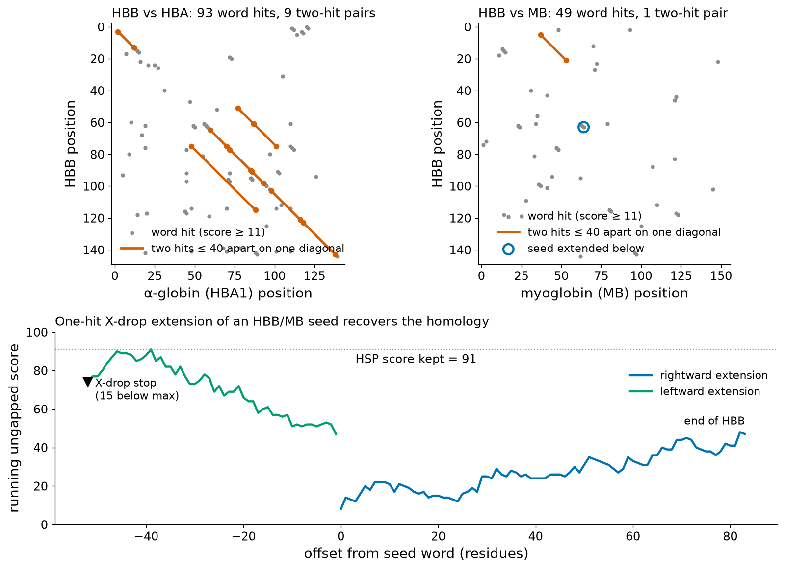

OrientationHow to use this unit
Comparing sequences is the most frequent operation in bioinformatics. Whether a laboratory interprets a patient's gene, identifies a bacterium from a 16S rRNA read or looks for a template to model a protein, the first step is the same: place the new sequence next to known sequences and ask how similar they are, where, and whether that similarity could have arisen by chance. This unit teaches the concepts, algorithms and statistics that answer these questions for two sequences at a time, and ends with the tool that applies them to whole databases: BLAST.
The unit develops items 4.1 to 4.3 of the official curriculum (Análisis de secuencias); items 4.4 to 4.7 are in the sibling document Unit 4B. Read it linearly the first time; each major section ends with a Key ideas box for revision. The Try it yourself boxes contain short Python programs that were executed while this document was prepared, followed by their genuine output; they run unchanged in Google Colab after !pip install biopython.
All examples use real sequences retrieved on 18 October 2026: human β-globin (UniProt P68871) and its relatives, human myoglobin (P02144), soybean leghemoglobin A (P02238) and, for database searches, the complete reviewed section of UniProtKB (Swiss-Prot release 2026_03, 575,748 sequences). The running case of the course — β-globin and sickle-cell disease — therefore appears in almost every section.
Learning outcomes
After studying this unit and completing its workshop you should be able to:
- Distinguish homology, similarity and identity, and classify a pair of homologous genes as orthologs, paralogs (in-paralogs or out-paralogs) or xenologs from a described evolutionary history.
- Describe global, local, semi-global (overlap) and glocal alignments, and choose the appropriate type for a given biological question.
- Explain the log-odds principle behind substitution matrices and derive, step by step, how PAM matrices are obtained by powering a PAM1 matrix and how BLOSUM matrices are obtained from clustered blocks.
- Compute the score of an alignment under a substitution matrix with linear or affine gap penalties.
- Fill a Needleman–Wunsch and a Smith–Waterman dynamic-programming matrix by hand, trace back the optimal alignment and verify it with Biopython.
- Interpret a dot plot and justify the choice of window and stringency.
- Explain how FASTA and BLAST gain speed (words, diagonals, neighbourhood threshold, two-hit seeding, X-drop extension) and what sensitivity they lose.
- Calculate bit scores, E-values and P-values from raw scores with the Karlin–Altschul equation, and explain why E-values depend on database size.
- Select the appropriate NCBI BLAST program and database for a query, set its key parameters and read every element of a BLAST report.
- Run BLAST+ locally on a database you build yourself, parse tabular output and recognise the classical pitfalls of similarity searching.
Prerequisites and estimated time
You need the material of Units 1–3: the central dogma and the genetic code (Unit 1), how sequences are produced (Unit 2), and the FASTA format, GenBank/RefSeq and UniProt records (Unit 3). No previous programming experience is assumed: every code box is short and commented, and the workshop can be completed with web tools only. Plan for about 9–10 hours of reading and exercises, 2 hours for the practical workshop and 2–3 hours for the self-assessment.
Map of the unit against the official curriculum
| Section of this document | Curriculum item | Main contents |
|---|---|---|
| Section 4.1 | 4.1 Comparación de secuencias | Homology, orthology, paralogy, xenology; alignment types; scoring systems; PAM and BLOSUM; gap penalties |
| Section 4.2 | 4.2 Alineamiento de dos secuencias | Brute force; dot plots; dynamic programming; Needleman–Wunsch; Smith–Waterman; significance; FASTA and BLAST algorithms; Karlin–Altschul statistics |
| Section 4.3 | 4.3 La herramienta BLAST de NCBI | Program variants, databases, parameters, reading the report, local BLAST+, remote BLAST, pitfalls |
| Running case | Transversal (all units) | Pairwise comparison and BLAST of human β-globin; the sickle-cell substitution seen by an alignment |
| Practical workshop | Practical component | Guided 2-hour session with NCBI BLAST, EMBOSS and Google Colab |
| Self-assessment | Assessment | 24 questions with worked answers |
Bridge
The lecture-level companion document Topic 1 — Sequence Alignment covers similar ground in a more compact form and with different worked examples (for instance, a DNA Needleman–Wunsch example and a BLAST word example taken from the lecture slides). Use it as a second explanation of anything that remains unclear here. Unit 3 (Primary databases and annotation) explains the records whose sequences we align, and Unit 4B continues with alignments of many sequences.
Section 4.1Sequence comparison
Curriculum 4.1: «Comparación de secuencias. Secuencias homólogas (ortólogas, parálogas, xenólogas). Tipos de alineamientos. Sistemas de puntuación. Matrices de sustitución (PAM, BLOSUM). Penalizaciones.» — Sequence comparison. Homologous sequences (orthologs, paralogs, xenologs). Types of alignments. Scoring systems. Substitution matrices (PAM, BLOSUM). Penalties.
Why we compare sequences
A newly determined sequence is a string of letters whose biological meaning is almost always inferred by comparison. If a new protein resembles, along its whole length, a protein of known function, the most economical explanation is common ancestry with conservation of fold and often of function. This reasoning underlies genome annotation (Unit 3), pathogen identification, the interpretation of human variants and template selection for structure prediction (Unit 5). Conversely, positions that remain unchanged among distant relatives are usually those where change is not tolerated — the histidine that binds the haem iron is conserved from human haemoglobin to plant leghemoglobin, as we shall see — whereas differences between close relatives are the raw material of phylogenetics (Unit 4B).
To compare two sequences we must decide which residue of one corresponds to which residue of the other. That correspondence is an alignment: the sequences are written one above the other, with gaps (dashes) inserted so that residues believed to descend from the same ancestral position share a column. This unit answers three questions about alignments: how to score one, how to find the best one efficiently, and how to decide whether it is better than expected by chance.
Homology, similarity and identity
These three words are often used loosely, but they mean different things.
Homology is an evolutionary statement: two sequences are homologous if they descend from a common ancestral sequence. Homology is therefore a qualitative, all-or-nothing property, exactly as two people either share a great-grandparent or do not. It is never correct to say that two proteins are "45% homologous"; they are homologous (or not), and they may be 45% identical. Because the ancestor is not available, homology is always an inference, never a direct observation.
Identity is a measurement on a particular alignment: the fraction of aligned columns in which the two residues are the same. Similarity is a broader measurement: the fraction of columns in which the two residues are either identical or chemically similar, where "similar" is defined by the scoring scheme (for instance, a positive score in the BLOSUM62 matrix, as BLAST reports under "Positives"). Both depend on how the alignment was built and on how the percentage is normalised (by the number of alignment columns, by the length of the shorter sequence, or by the number of aligned residue pairs), so a percentage should always be reported with the method that produced it.
The link between measurement and inference is statistical. Sequences that are significantly more similar than unrelated sequences of the same length and composition are inferred to be homologous, because convergent evolution of extended sequence similarity is extremely improbable [1]. The reverse is not true: homologous sequences may have diverged so far that their similarity is no longer detectable. Human β-globin and soybean leghemoglobin are homologous (both have the globin fold and bind haem through a proximal histidine [2]), yet in a global alignment computed in this unit they share only 20.5% identical columns — a value also reached by many pairs of unrelated proteins. Below roughly 20–35% identity lies the so-called twilight zone, where similarity alone no longer distinguishes homologs from chance alignments reliably [3].
Common misconceptions
- "Percent homology" does not exist. Report percent identity or percent similarity, and say how it was computed.
- Low identity does not prove that two proteins are unrelated; it only means that sequence comparison alone cannot demonstrate the relationship. Structure comparison (Unit 5) or profile methods (Unit 4B) may still reveal it.
- High similarity over a short, compositionally biased segment (for example, a run of prolines or glutamines) is not evidence of homology. Statistics that take length and composition into account are required (Section 4.2).
Orthologs, paralogs and xenologs
Homologous genes can be related through three kinds of evolutionary event, and the vocabulary introduced by Walter Fitch distinguishes them [4]. Figure 1 shows the three situations on a gene tree.

Orthologs are homologous genes in different species whose most recent common ancestor was a speciation event. Human β-globin (HBB) and chimpanzee β-globin are orthologs; in fact, the BLAST search of this unit finds that the chimpanzee and bonobo β-globin sequences in Swiss-Prot (P68873 and P68872) are identical to the human one over all 147 residues. Orthologs usually, though not always, perform the same function in their respective species, which is why "find the ortholog" is the standard strategy for transferring functional annotation between organisms [5].
Paralogs are homologous genes whose most recent common ancestor was a gene duplication. The human globin genes are a textbook example: HBB, HBD (δ), HBG1 and HBG2 (γ, fetal) and HBE1 (ε, embryonic) form the β-globin cluster on chromosome 11, while HBA1, HBA2 and HBZ (ζ) form the α-globin cluster on chromosome 16; all of them, and myoglobin, arose from duplications of an ancestral globin gene [2]. Paralogs are free to diverge in function after duplication: myoglobin stores oxygen in muscle as a monomer, whereas α- and β-globin assemble into the haemoglobin tetramer, and the embryonic and fetal chains differ in oxygen affinity from the adult ones. Inferring function from a paralog is therefore riskier than inferring it from an ortholog.
Duplications that occur after a given speciation event produce in-paralogs (paralogs within one lineage, relative to that speciation), whereas duplications that preceded the speciation produce out-paralogs [6]. The distinction is relative to the comparison being made: when human is compared with chimpanzee, HBG1 and HBG2 are in-paralogs only if their duplication happened after the human–chimpanzee split, and out-paralogs otherwise. In-paralogs are collectively "co-orthologous" to the single gene of the other species, which complicates automated ortholog assignment.
Xenologs are homologs whose relationship involves horizontal (lateral) gene transfer: a gene moved from one lineage into another and diverged there [5]. Horizontal transfer is frequent among bacteria (antibiotic-resistance genes on plasmids are the clinically most visible example) and can make a bacterial gene look more similar to genes of a distant phylum than to those of its own genus — one reason why a single best BLAST hit is a weak basis for taxonomic assignment.
Clinical connection: orthologs and animal models
The relevance of an animal model rests on orthology: a drug target is studied in rodents only after confirming that the rodent gene is the true ortholog of the human target and that binding-site residues are conserved. When a family has expanded by duplication in one lineage (cytochrome P450 enzymes are a classical case), rodent and human enzymes may not be one-to-one orthologs, and metabolism in the animal may not predict metabolism in patients.
Types of alignments
An alignment can be classified according to how many sequences it contains, how much of each sequence it must cover, and whether gaps are allowed (Figure 2).

- Global alignment aligns the sequences end to end. It is appropriate when both sequences are expected to be homologous along their whole length, such as human β- and δ-globin, which have the same length (147 residues including the initiator methionine) and differ at only 10 positions. The classical algorithm is that of Needleman and Wunsch [7].
- Local alignment finds the pair of segments, one from each sequence, with the highest score, and ignores the rest. It is appropriate when only part of the sequences is related: a shared domain in two multidomain proteins, a gene fragment inside a genome, or distantly related sequences in which only the core is still recognisable. The classical algorithm is that of Smith and Waterman [8], and BLAST reports local alignments.
- Semi-global (also called overlap or "end-gap-free") alignment is a global alignment in which gaps at the beginning or end of either sequence are not penalised. It is used to assemble overlapping reads (Unit 2) and to align sequences of different length that are homologous where they overlap.
- Glocal alignment is the special case in which one sequence must be aligned completely and the other only locally. Mapping a short sequencing read onto a reference chromosome, or aligning a primer to a template, are glocal problems.
- Ungapped versus gapped: an ungapped alignment allows only substitutions (the two segments slide along each other without insertions). It is fast and has a complete statistical theory (Section 4.2), and BLAST uses it as an intermediate step; real homologous sequences, however, usually differ by insertions and deletions as well, so final alignments are gapped.
- Pairwise versus multiple: this unit treats two sequences at a time. Aligning many sequences simultaneously (multiple sequence alignment, MSA) is computationally much harder and is the subject of Unit 4B.
Key ideas so far
- Homology is an evolutionary inference (yes or no); identity and similarity are measurements on an alignment (percentages).
- Orthologs separate by speciation, paralogs by duplication, xenologs through horizontal transfer; in-/out-paralogs are defined relative to a given speciation.
- Global alignment for sequences related end to end; local for shared regions; semi-global and glocal for overlaps and short sequences inside long ones.
Scoring systems
An alignment score is built additively: each column receives a score and the alignment score is their sum. A pair of aligned residues is scored by a substitution score s(a, b), and a residue opposite a gap by a gap penalty. Additivity assumes that positions evolve independently, which is not strictly true (residues in contact co-evolve), but it makes optimisation tractable and works well in practice.
Identity and match/mismatch scoring
The simplest scheme gives +1 to identities and 0 otherwise, so the score counts identities. A richer scheme rewards matches and penalises mismatches (for example +1/−1; in BLAST+ 2.17.0 the megablast task uses +1/−2 and the blastn task +2/−3, as printed at the end of their reports). Stringent mismatch penalties favour nearly identical sequences, mild ones more divergent sequences.
Transitions and transversions
Not all nucleotide substitutions are equally probable. Transitions exchange a purine for a purine (A↔G) or a pyrimidine for a pyrimidine (C↔T); transversions exchange a purine for a pyrimidine or vice versa. There are four possible transitions and eight possible transversions, so if substitutions occurred at random transversions would be twice as common. In real sequences the opposite is observed. In the coding sequences of human β- and δ-globin (RefSeq NM_000518.5 and NM_000519.4, 444 nucleotides each, which align without gaps) we counted 32 differences: 21 transitions and 11 transversions. Of the 27 codons that differ, 17 differ synonymously (same amino acid), and 18 of the 32 nucleotide differences sit at third codon positions, which is exactly the pattern expected when selection acts on the protein. A scoring scheme can encode this knowledge by penalising transitions less than transversions.
Log-odds scores: the principle behind every substitution matrix
For proteins, the 20 amino acids differ widely in size, charge and hydrophobicity, and some substitutions (isoleucine for valine) are accepted by evolution far more often than others (tryptophan for glycine). The modern way of turning this knowledge into numbers is the log-odds score, which compares two hypotheses about an aligned pair of residues a and b:
- the homology hypothesis: a and b are aligned because they descend from the same ancestral residue, in which case the pair occurs with the target frequency qab observed in reliable alignments of related proteins;
- the random hypothesis: a and b are aligned by chance, in which case the pair occurs with probability papb, the product of their background frequencies.
A positive score means the pair is seen more often in homologs than by chance, a negative score less often. Because logarithms turn products into sums, the score of an ungapped alignment is the log-likelihood ratio of the whole alignment under the two hypotheses. Altschul showed that any substitution matrix implicitly corresponds to a set of target frequencies, so choosing a matrix is equivalent to choosing an assumed evolutionary distance [9]. Two consequences follow: the expected score of a random pair, Σ papbs(a, b), must be negative for local alignment to work, and rare residues that are conserved (tryptophan, cysteine) receive large positive diagonal scores.
Try it yourself — read scores from two standard matrices
Biopython ships the standard matrices. The program below prints a few entries of BLOSUM62 and PAM250.
from Bio.Align import substitution_matrices
b62 = substitution_matrices.load("BLOSUM62")
p250 = substitution_matrices.load("PAM250")
for a, b in [("W", "W"), ("C", "C"), ("A", "A"), ("I", "V"), ("D", "E"), ("W", "G")]:
print(f"{a}-{b}: BLOSUM62 = {b62[a][b]:+.0f} PAM250 = {p250[a][b]:+.0f}")Note that tryptophan and cysteine have the largest diagonal scores, that conservative exchanges (I–V, D–E) score positively, and that W–G is negative in both. The absolute values differ because PAM250 is expressed in tenths of a log10 unit (Dayhoff's convention) and BLOSUM62 in half-bits; only the relative pattern matters.
Substitution matrices I: the PAM series
The first widely used log-odds matrices were derived by Margaret Dayhoff and colleagues from protein families whose members were very closely related [10]. The derivation has four steps, and understanding them explains both the strengths and the limitations of PAM matrices.
Step 1: count accepted point mutations
Dayhoff aligned sequences that were at least 85% identical, so that each observed difference could safely be attributed to a single substitution, built phylogenetic trees for each family, and counted how many times each amino acid had been replaced by each other amino acid along the branches. A substitution observed in a surviving protein is an accepted point mutation (PAM): a mutation that was not removed by natural selection. To get a feeling for the raw material, compare human β- and δ-globin, which are 93.2% identical in our alignment. They differ at exactly ten positions (UniProt numbering): S10T, T13N, E23A, T51S, A87S, T88Q, H117R, H118N, P126Q and V127M. Several of these are conservative (S↔T, T↔S) and none involves the haem-contact histidines — exactly the bias that a substitution matrix must capture.
Step 2: normalise to one accepted mutation per hundred residues
The counts are converted into a mutation probability matrix M, in which Mij is the probability that amino acid i is replaced by amino acid j over a defined evolutionary interval. The interval is chosen so that, on average, 1% of residues change; this matrix is called PAM1, and one PAM unit is the evolutionary distance at which one accepted point mutation occurs per 100 residues. Table 1 shows an excerpt of a PAM1 matrix computed for this document from the Dayhoff rate matrix as distributed with the PAML software [11][12] (details in the Try it yourself box below).
| A | S | D | E | V | W | |
|---|---|---|---|---|---|---|
| A | 9867.0 | 28.2 | — | — | — | — |
| D | — | — | — | 56.4 | — | — |
| E | — | — | 53.4 | — | 2.4 | — |
| W | — | — | — | — | — | 9976.0 |
Read the table as follows: over one PAM of evolution, an alanine remains alanine with probability 0.9867 and becomes serine with probability 0.00282; aspartate becomes glutamate with probability 0.00564; glutamate becomes valine — the sickle-cell substitution — with probability only 0.00024, more than twenty times less often than it becomes aspartate. Tryptophan is the most conserved residue (0.9976 retained), while asparagine is the least conserved (0.9822). The diagonal entries are high because PAM1 represents a very short evolutionary distance. Figure 3 (left) shows all 380 off-diagonal entries.
Step 3: extrapolate to longer distances by matrix multiplication
Dayhoff assumed that evolution behaves as a Markov chain: the probability that a residue changes during the next interval depends only on its current identity, not on its history. Under this assumption, the substitution probabilities after n PAM units are obtained by multiplying PAM1 by itself n times:
Matrix powering automatically accounts for multiple substitutions at the same site (A→S→T), for back-mutations (A→S→A) and for parallel changes — events invisible when two sequences are simply compared. This is the key to the distinction between observed difference and evolutionary distance.
Step 4: convert probabilities into log-odds scores
Finally, each probability is divided by the background frequency of the replacement amino acid and converted into a log-odds score; Dayhoff used ten times the base-10 logarithm, rounded to integers:

We carried out the whole procedure for this document. Starting from the Dayhoff exchangeabilities and amino-acid frequencies, we built PAM1, raised it to the 250th power and converted the result into scores. The resulting PAM250 reproduces the published matrix almost perfectly (Figure 3, right): 98.75% of the 400 entries are identical after rounding and none differs by more than one unit; for example W–W = 17 and C–C = 12 in both.
Try it yourself — compute PAM250 from PAM1
The program downloads the Dayhoff rate data distributed with PAML, finds the time interval that produces 1% expected change (PAM1), raises PAM1 to the powers 80 and 250 and reports the expected percent difference and two diagonal scores of the derived PAM250.
import urllib.request, numpy as np
from scipy.linalg import expm
from scipy.optimize import brentq
url = "https://raw.githubusercontent.com/abacus-gene/paml/master/dat/dayhoff.dat"
lines = urllib.request.urlopen(url).read().decode().split("\n")
S = np.zeros((20, 20)) # exchangeabilities (lower triangle in file)
for i in range(1, 20):
for j, v in enumerate(lines[i].split()):
S[i, j] = S[j, i] = float(v)
pi = np.array([float(x) for x in " ".join(lines[21:24]).split()]); pi /= pi.sum()
Q = S * pi[None, :]; np.fill_diagonal(Q, -Q.sum(1)) # instantaneous rate matrix
t1 = brentq(lambda t: 1 - (pi * np.diag(expm(Q * t))).sum() - 0.01, 1e-6, 1)
PAM1 = expm(Q * t1) # 1% expected change
for n in (1, 80, 250):
Pn = np.linalg.matrix_power(PAM1, n)
print(f"PAM{n}: expected difference = {100 * (1 - (pi * Pn.diagonal()).sum()):.1f}%")
AA = "ARNDCQEGHILKMFPSTWYV"
P250 = np.linalg.matrix_power(PAM1, 250)
score = np.round(10 * np.log10(P250 / pi[None, :])).astype(int)
print("PAM250 W-W =", score[AA.index("W"), AA.index("W")], " C-C =", score[AA.index("C"), AA.index("C")])Percent difference versus PAM distance
How different are two sequences separated by n PAM units? The expected fraction of positions that differ is 1 − Σi piM(n)ii, which we computed for every n up to 500 (Figure 4). At short distances the two quantities coincide (PAM1 gives 1.0% difference, PAM10 gives 9.4%), but the curve soon bends: PAM80 corresponds to 50.1% observed difference, PAM120 to 62.1%, PAM250 to 80.4% (that is, about 20% identity) and PAM500 still only to 89.8%. The reason is that, at long distances, many sites have changed more than once and some have reverted, so the observed difference saturates. It never reaches 100%, because even two random sequences share identical residues by chance.

For more rigour: PAM as a continuous-time Markov process
Modern implementations write the substitution process as a rate matrix Q (with Qij = Sijπj for i ≠ j and rows summing to zero), so that the transition probabilities after time t are P(t) = eQt, the matrix exponential. PAM1 is P(t1) with t1 chosen such that 1 − Σ πiPii(t1) = 0.01, and P(nt1) = P(t1)n, which is why powering and exponentiation agree. If the model is time-reversible (πiPij = πjPji), the log-odds matrix log[Pij(t)/πj] is symmetric. The same mathematics underlies the evolutionary models used to build phylogenetic trees in Unit 4B, and later matrices such as JTT [13] and that of Gonnet and colleagues [14] re-estimated the counts from much larger data sets.
PAM has known limitations: the original counts came from a small set of closely related families, so rare exchanges were poorly estimated; the Markov model ignores rate variation among sites; and PAM250 is an extrapolation of short-distance observations rather than a measurement on divergent sequences. These limitations motivated BLOSUM.
Substitution matrices II: the BLOSUM series
In 1992 Steven and Jorja Henikoff proposed a different strategy: instead of extrapolating from closely related sequences, count substitutions directly in conserved regions of distantly related proteins [15]. Their raw material was the BLOCKS database, a collection of ungapped multiple alignments of the most conserved segments of protein families [16]. Because blocks contain no gaps, every column is a set of residues that are reliably homologous, and substitutions can be counted without building trees. The resulting matrices are called BLOSUM (BLOcks SUbstitution Matrix).
The derivation
- Cluster. Within each block, sequences that are at least X% identical to each other are grouped into clusters (single linkage: a sequence joins a cluster if it is ≥ X% identical to any member). Each cluster is then treated as a single sequence whose residue counts are averaged. Clustering prevents families with many near-identical members from dominating the statistics. The threshold X gives the matrix its name: BLOSUM62 is built with X = 62%, BLOSUM80 with 80%, BLOSUM45 with 45%.
- Count pairs. For every column, every pair of residues taken from different clusters is counted, each pair weighted by 1/(n1n2) where n1 and n2 are the sizes of the two clusters. The weighted counts fab are summed over all columns and all blocks.
- Convert to frequencies. The observed pair frequencies are qab = fab/Σf; the background frequency of each residue is pa = qaa + Σb≠a qab/2; the frequency expected by chance is eaa = pa2 for identical pairs and eab = 2papb for different residues (the factor 2 because a–b and b–a are counted together).
- Take log-odds. s(a, b) = round[2 · log2(qab/eab)], i.e. half-bit units.
Note the inversion of the naming logic with respect to PAM: a higher BLOSUM number means a matrix built from more similar sequences (suitable for close relatives), whereas a higher PAM number means a longer evolutionary distance. In information content (defined in the next subsection), BLOSUM62 corresponds to a fairly long evolutionary distance: its relative entropy in our calculation (0.56 bits) lies between those of the PAM160 (0.69 bits) and PAM200 (0.51 bits) matrices that we derived from PAM1 (the PAM values were computed with the Dayhoff model frequencies, so the comparison is approximate).
A worked BLOSUM computation on a real block
To see the procedure in action we extracted a small real block. The eight globins of the running case (human HBB, HBD, HBG1, HBE1, HBA1, HBZ and MB, and soybean leghemoglobin A) were aligned with MAFFT [17], and we took the 14 ungapped columns surrounding the distal histidine of helix E, which in β-globin corresponds to residues 59–72 (PKVKAHGKKVLGAF):
At a 62% threshold the four β-like chains (HBB, HBD, HBG1 and HBE1, which are 79–100% identical within the block) collapse into one cluster, and the other four sequences remain singletons: five clusters, ten cluster pairs per column and a total pair weight of 14 × 10 = 140. The resulting scores are shown in Figure 5 (left). The invariant histidine scores +8 (H–H), conservative exchanges are rewarded (K–R +4, L–V +4, F–L +4), and A–V receives −5. The block is far too small to produce a usable matrix — some unexpected positive scores, such as E–P = +6, merely reflect a single observed pair — but every number was obtained by exactly the arithmetic that Henikoff and Henikoff applied to more than 2000 blocks [15].
Try it yourself — a toy BLOSUM matrix
import math, itertools
from collections import defaultdict
block = { # 14 ungapped columns around the distal histidine (E7), from a MAFFT alignment
"HBB_HUMAN":"PKVKAHGKKVLGAF", "HBD_HUMAN":"PKVKAHGKKVLGAF", "HBG1_HUMAN":"PKVKAHGKKVLTSL",
"HBE_HUMAN":"PKVKAHGKKVLTSF", "HBA_HUMAN":"AQVKGHGKKVADAL", "HBAZ_HUMAN":"AQLRAHGSKVVAAV",
"MYG_HUMAN":"EDLKKHGATVLTAL", "LGB3_SOYBN":"PKLTGHAEKLFALV"}
def identity(a, b): return sum(x == y for x, y in zip(a, b)) / len(a)
# 1) cluster sequences >= 62% identical (single linkage)
names = list(block); parent = {n: n for n in names}
def root(n):
while parent[n] != n: n = parent[n]
return n
for a, b in itertools.combinations(names, 2):
if identity(block[a], block[b]) >= 0.62: parent[root(a)] = root(b)
clusters = defaultdict(list)
for n in names: clusters[root(n)].append(n)
clusters = list(clusters.values()); print("clusters:", [len(c) for c in clusters])
# 2) count weighted pairs between clusters, column by column
f = defaultdict(float)
for col in range(14):
for c1, c2 in itertools.combinations(clusters, 2):
w = 1 / (len(c1) * len(c2))
for s1 in c1:
for s2 in c2:
f[tuple(sorted((block[s1][col], block[s2][col])))] += w
total = sum(f.values()); q = {k: v / total for k, v in f.items()}
p = defaultdict(float) # background from the pairs themselves
for (a, b), v in q.items():
p[a] += v if a == b else v / 2; p[b] += 0 if a == b else v / 2
def s(a, b):
a, b = sorted((a, b)); e = p[a] ** 2 if a == b else 2 * p[a] * p[b]
return round(2 * math.log2(q[(a, b)] / e))
print("total pair weight:", total)
print("s(H,H) =", s("H", "H"), " s(K,R) =", s("K", "R"), " s(L,V) =", s("L", "V"), " s(A,V) =", s("A", "V"))Change the threshold from 0.62 to 1.01 (no clustering) and observe how the four β-like sequences then contribute many more pairs, inflating the weight of what is essentially one sequence.

A footnote of history: in 2008 Styczynski and colleagues found that the BLOSUM62 used by BLAST for sixteen years had been computed with a software error, and that the "correct" matrix performed slightly worse in searches [18] — a substitution matrix is an empirically optimised tool, not a law of nature.
Relative entropy and the choice of matrix
How much does one aligned pair of residues tell us about homology? Altschul answered with the relative entropy of the matrix — the average score per aligned pair in true homologous alignments, expressed in bits [9]:
We computed H for eight standard matrices, using the composition of Swiss-Prot (209,017,843 residues; leucine is the most frequent amino acid at 9.65% and tryptophan the rarest at 1.11%) as the background (Figure 5, right). The values were 1.06 bits for BLOSUM90, 0.89 for BLOSUM80, 0.56 for BLOSUM62, 0.47 for BLOSUM50 and 0.34 for BLOSUM45; and 2.47 bits for PAM30, 1.43 for PAM70 and 0.28 for PAM250. (Published values differ slightly because each matrix was originally evaluated with its own background frequencies.)
The practical meaning is direct. To distinguish a real alignment from chance one needs a minimum total score that depends on the size of the search. For the Swiss-Prot searches of this unit, an E-value of 0.001 requires about 42 bits (Section 4.2). With PAM30 (2.47 bits per position) a homologous segment of about 17 residues reaches that level, but only if the sequences really are close relatives; BLOSUM62 needs about 76 aligned positions and BLOSUM45 (0.34 bits per position) about 124, but distant relationships that PAM30 would score negatively become detectable. Hence the rule: matrices for short distances are best for short or closely related sequences; matrices for long distances are best for long, divergent sequences. This is why NCBI BLAST offers PAM30 and PAM70 for short peptide queries and uses BLOSUM62 — a good compromise — as the general default.
| Situation | Suggested matrix | Reason |
|---|---|---|
| Short queries (< 30 residues), e.g. peptides, epitopes | PAM30 or PAM70 | High information per position compensates for few positions |
| General searches, unknown divergence | BLOSUM62 | Robust default; tuned on database-search benchmarks |
| Closely related sequences, e.g. strains, alleles | BLOSUM80 or BLOSUM90 | Penalises substitutions more, favours near-identical matches |
| Long queries, distant homologs | BLOSUM45 or BLOSUM50 | Tolerates substitutions; needs long alignments to reach significance |
Gap penalties
Insertions and deletions (indels) appear as gaps, and the scoring system must penalise them; otherwise the optimal alignment would insert gaps freely to bring identical residues together. Three models are in common use (Figure 6).
- Linear penalty: a gap of length k costs γ(k) = −d·k. Each gapped position is penalised independently. This model is mathematically simplest and is used in the hand-worked examples of Section 4.2, but it is biologically unrealistic: a single indel event of ten residues is far more probable than ten independent single-residue indels.
- Affine penalty: γ(k) = −(o + e·k), with a large gap-opening cost o and a small extension cost e (some programs write −(o + e·(k − 1)), so the parameter values must always be read with the program's convention). BLASTP uses o = 11 and e = 1 with BLOSUM62, so a one-residue gap costs 12 and a ten-residue gap costs 21; EMBOSS needle uses 10 and 0.5. Affine penalties make one long gap much cheaper than several short ones, which matches the biology of indels. Their efficient implementation requires the three-matrix algorithm of Gotoh, described in Section 4.2 [19].
- Concave (for example logarithmic) penalties grow ever more slowly with gap length, which fits empirical indel length distributions even better, but they are computationally more expensive and rarely used in standard tools.

End gaps — gaps before the first or after the last residue of a sequence — deserve special treatment. In a global alignment of a full-length protein with a fragment, penalising end gaps would force the fragment to spread out along the protein; programs therefore often score end gaps differently (EMBOSS needle, for instance, does not penalise them by default), which turns a global alignment into the semi-global alignment of Figure 2. Local alignment, by construction, never pays for end gaps.
Gap penalties and matrices must be chosen together: a gap cost of 11 means something different in half-bit BLOSUM62 units than in third-bit BLOSUM50 units, and BLAST offers only combinations for which statistical parameters have been estimated (Section 4.2). For nucleotide searches BLAST+ uses other defaults: gap costs 5 (existence) and 2 (extension) for the blastn task, and a linear extension cost of 2.5 for megablast.
Pitfall: gaps placed in the wrong region
Gaps in protein alignments are concentrated in loops on the protein surface; insertions inside α-helices or β-strands are rare. An alignment that places a gap in the middle of a known helix of the globin fold should be regarded with suspicion, even if its score is optimal under the chosen parameters. Optimal is always "optimal under the model", and the model is a simplification.
Key ideas of Section 4.1
- Alignment scores are sums of column scores; substitution scores are log-odds ratios of homologous versus random pairing, and gap penalties are subtracted.
- PAM: counts from close relatives → PAM1 (1% change) → PAMn by matrix powering under a Markov model → log-odds. PAM250 ≈ 80% observed difference.
- BLOSUM: counts directly from ungapped blocks of distant relatives, after clustering sequences above X% identity. Higher BLOSUM number = closer relatives.
- Relative entropy measures information per aligned position; short/close → PAM30 or BLOSUM80; general → BLOSUM62; long/distant → BLOSUM45.
- Affine gap penalties (opening + extension) model indels better than linear penalties; matrix and gap costs must be chosen as a pair.
Bridge
The companion lecture document treats nucleotide scoring and works through the score of a given alignment under a 4 × 4 matrix (its Section 4.7). Profiles and position-specific scoring matrices, which generalise substitution matrices to one column of a family alignment at a time, are developed in Unit 4B.
Section 4.2Alignment of two sequences
Curriculum 4.2: «Alineamiento de dos secuencias. El algoritmo de la fuerza bruta. Matrices de puntos (dot plots). Algoritmos de programación dinámica. Alineamientos globales (Needleman-Wunsch). Alineamientos locales (Smith-Waterman). Algoritmos heurísticos: FASTA y BLAST.» — Alignment of two sequences. The brute-force algorithm. Dot matrices (dot plots). Dynamic-programming algorithms. Global alignments (Needleman–Wunsch). Local alignments (Smith–Waterman). Heuristic algorithms: FASTA and BLAST.
Section 4.1 told us how to score an alignment; this section addresses how to find the best one and how to judge whether it means anything, from exhaustive enumeration through dot plots and dynamic programming to the heuristics that make database searches feasible.
The brute-force algorithm
The most direct approach is to write down every possible alignment, score each and keep the best. This brute-force algorithm is guaranteed to be correct; the only question is how long it takes, which depends on how many alignments exist.
Consider two sequences of lengths n and m. An alignment can be described as a path through a grid of (n + 1) × (m + 1) points, starting at the top-left corner and ending at the bottom-right corner, in which every step goes diagonally (align a residue of each sequence), down (residue of the first sequence against a gap) or right (residue of the second sequence against a gap). The number of such paths is the Delannoy number:
If we regard as identical two alignments that pair the same residues (so that the order of adjacent gaps in the two sequences does not matter), the count is smaller but still enormous: Σk C(n, k) · C(m, k) = C(n + m, n), which for n = m is the central binomial coefficient C(2n, n) ≈ 22n/√(πn). Table 3 shows both counts, computed exactly with Python's integer arithmetic.
| Sequence lengths | Distinct alignments C(n+m, n) | All grid paths D(n, m) |
|---|---|---|
| 3 × 3 | 20 | 63 |
| 8 × 7 (the worked example below) | 6,435 | 108,545 |
| 10 × 10 | 184,756 | 8,097,453 |
| 147 × 142 (HBB × HBA1) | ≈ 1085.7 | ≈ 10109.3 |
| 300 × 300 | ≈ 10179.1 | ≈ 10228.2 |
For human β- and α-globin, two short proteins, there are about 10109 grid paths. A computer that scored a billion alignments per second would need about 1084 billion years to enumerate them (a billion years contains 3.2 × 1016 seconds). Brute force is therefore not an algorithm one can use; it is the reference that shows why a smarter strategy is indispensable (Figure 7). The smarter strategy, dynamic programming, solves the same problem exactly by filling only (n + 1)(m + 1) cells — 148 × 143 = 21,164 cells for HBB × HBA1.

Dot plots (dot matrices)
Before computers could align sequences routinely, the most informative way of comparing two sequences was visual. In a dot plot (dot matrix), one sequence is written along the horizontal axis and the other along the vertical axis, and a dot is placed in cell (i, j) whenever residue i of the first sequence matches residue j of the second [20]. Regions of similarity then appear as diagonal lines, because consecutive matching residues produce consecutive dots along a diagonal. A dot plot does not produce an alignment directly, but it shows all regions of similarity at once, including those that a single optimal alignment would hide.
Noise, windows and stringency
With single-residue matching, a protein dot plot is dominated by noise: with the amino-acid composition of Swiss-Prot the probability that two random residues are identical is Σpa2 = 0.060, so about 1 cell in 17 contains a chance match; for DNA of equal base composition the figure is 1 in 4. Maizel and Lenk introduced the standard filter [21]: a window of w residues slides along each diagonal, and a dot is drawn at the window's centre only if the number of matches (or the summed substitution score) within the window reaches a stringency threshold s. Isolated chance matches are removed, whereas runs of similarity survive.

Figure 8 demonstrates the trade-off with human β- and α-globin. Without filtering (left) the homology is invisible among 1,541 chance dots. With a window of 10 and stringency 4 (centre) the main diagonal emerges clearly, together with a few short spurious segments; with a window of 15 and stringency 7 (right) almost only the true diagonal remains, but it is interrupted wherever local similarity drops. The general rule is: large windows and high stringency for distantly related or long sequences, small windows for closely related sequences or for locating short exact features. Window and stringency are always a compromise between noise (false dots) and sensitivity (missed segments).
Reading a dot plot
- A continuous main diagonal indicates similarity along the whole length (global homology).
- A diagonal shifted sideways or broken into offset segments indicates an insertion or deletion in one sequence: the diagonal jumps to a parallel line, and the size of the jump is the length of the indel.
- Parallel diagonals in a self-comparison (a sequence against itself) reveal internal repeats. Figure 9 (left) compares human polyubiquitin-C (UBC, P0CG48; 685 residues) with itself: the sequence contains nine exact copies of the 76-residue ubiquitin, so the plot shows the main diagonal plus eight parallel diagonals on each side, spaced 76 residues apart.
- In DNA, inverted repeats and palindromic regions (for example, transcription-terminator hairpins) appear as diagonals perpendicular to the main direction when the sequence is compared with its reverse complement.
- Short isolated segments away from the diagonal may be low-complexity regions (Section 4.3) or chance.

Dot plots remain in use to compare long genomic regions (for example, to visualise rearrangements between genomes) and to inspect repeats. Their limitation is shown in Figure 9 (right): at about 25% identity the homology between β-globin and myoglobin appears only as a few short segments. Detecting such relationships requires substitution matrices and an optimisation algorithm.
Try it yourself — a dot plot in a few lines of NumPy
import urllib.request, numpy as np
from io import StringIO
from Bio import SeqIO
def uniprot(acc):
txt = urllib.request.urlopen(f"https://rest.uniprot.org/uniprotkb/{acc}.fasta").read().decode()
return str(SeqIO.read(StringIO(txt), "fasta").seq)
def dotplot(a, b, window, stringency):
A, B = np.array(list(a)), np.array(list(b))
match = (A[:, None] == B[None, :]).astype(int)
n, m = len(a) - window + 1, len(b) - window + 1
score = sum(match[k:k + n, k:k + m] for k in range(window)) # identities along diagonals
return score >= stringency
hbb, hba = uniprot("P68871"), uniprot("P69905")
for w, s in [(1, 1), (10, 4), (15, 7)]:
print(f"window {w:2d}, stringency {s}: {dotplot(hbb, hba, w, s).sum()} dots")On the web, EMBOSS dotmatcher and dottup (EBI Job Dispatcher) produce dot plots with adjustable window and threshold. Plot dotplot(hbb, hba, 10, 4) with matplotlib.pyplot.imshow to reproduce the centre panel of Figure 8.
Dynamic-programming algorithms
Dynamic programming is a general strategy, formalised by Richard Bellman in the 1950s, for problems whose optimal solution can be assembled from optimal solutions of smaller sub-problems. Sequence alignment has this property. Consider the best alignment of the first i residues of sequence x with the first j residues of sequence y, and look at its last column. There are only three possibilities:
- xi is aligned with yj: the rest of the alignment must be an optimal alignment of x1..i−1 with y1..j−1;
- xi is aligned with a gap: the rest must be an optimal alignment of x1..i−1 with y1..j;
- yj is aligned with a gap: the rest must be an optimal alignment of x1..i with y1..j−1.
If the rest were not optimal, we could replace it with a better one and improve the whole alignment, a contradiction. Therefore the best score F(i, j) can be computed from three previously computed values, and the score of the complete alignment, F(n, m), is obtained by filling a table row by row. The number of alignments is astronomical, but they share sub-alignments; dynamic programming evaluates each shared sub-problem once. That is the entire trick.
Every dynamic-programming alignment algorithm has three phases: initialisation of the first row and column, recursion (filling each cell from its neighbours while recording which one gave the maximum) and traceback (following the pointers back from the final cell to recover the alignment).
Global alignment: the Needleman–Wunsch algorithm
Needleman and Wunsch published the first dynamic-programming method for comparing protein sequences in 1970 [7]. In its modern form with a linear gap penalty d, the algorithm is:
F(i, j) = max { F(i−1, j−1) + s(xi, yj), F(i−1, j) − d, F(i, j−1) − d } where s(xi, yj) is the substitution score of the two residues and d > 0 the cost of one gap position. The optimal global score is F(n, m).
The first row and column represent aligning a prefix of one sequence entirely against gaps, which is why they decrease by d at each step.
Worked example: the N-termini of β- and α-globin
We align the first residues after the initiator methionine of human β-globin, x = VHLTPEEK (P68871, residues 2–9), with those of human α-globin, y = VLSPADK (P69905, residues 2–8), using BLOSUM62 and a linear gap penalty d = 8. The completed matrix is Table 4; you should be able to reproduce every cell.
| – | V | L | S | P | A | D | K | |
|---|---|---|---|---|---|---|---|---|
| – | 0 | -8 | -16 | -24 | -32 | -40 | -48 | -56 |
| V | -8 | 4 | -4 | -12 | -20 | -28 | -36 | -44 |
| H | -16 | -4 | 1 | -5 | -13 | -21 | -29 | -37 |
| L | -24 | -12 | 0 | -1 | -8 | -14 | -22 | -30 |
| T | -32 | -20 | -8 | 1 | -2 | -8 | -15 | -23 |
| P | -40 | -28 | -16 | -7 | 8 | 0 | -8 | -16 |
| E | -48 | -36 | -24 | -15 | 0 | 7 | 2 | -6 |
| E | -56 | -44 | -32 | -23 | -8 | -1 | 9 | 3 |
| K | -64 | -52 | -40 | -31 | -16 | -9 | 1 | 14 |
Initialisation. Row 0 and column 0 are 0, −8, −16, … because aligning k residues against gaps costs 8k.
Some cells in detail.
- F(1, 1), V against V: diagonal 0 + s(V,V) = 0 + 4 = 4; from above −8 − 8 = −16; from the left −8 − 8 = −16. Maximum 4, from the diagonal.
- F(2, 1), H against V: diagonal F(1,0) + s(H,V) = −8 − 3 = −11; from above F(1,1) − 8 = 4 − 8 = −4; from the left F(2,0) − 8 = −16 − 8 = −24. Maximum −4, from above: H is placed against a gap.
- F(2, 2), H against L: diagonal F(1,1) + s(H,L) = 4 − 3 = 1; from above F(1,2) − 8 = −4 − 8 = −12; from the left F(2,1) − 8 = −12. Maximum 1.
- F(5, 4), P against P: diagonal F(4,3) + s(P,P) = 1 + 7 = 8; from above −2 − 8 = −10; from the left −7 − 8 = −15. Maximum 8.
- F(8, 7), K against K: diagonal F(7,6) + s(K,K) = 9 + 5 = 14; from above 3 − 8 = −5; from the left 1 − 8 = −7. The optimal global score is 14.
Traceback. Starting at F(8, 7) and following at each cell the move that produced its value, we pass through the shaded cells to F(0, 0). Every diagonal move emits an aligned pair, and the single vertical move from F(2, 1) to F(1, 1) emits H against a gap. Reading the moves from start to end gives the alignment:
Biologically this is a satisfying result: the gap corresponds to the fact that the mature α chain is one residue shorter at its N-terminus than the β chain, and the same gap appears in the full-length alignments produced later in this unit.
Try it yourself — verify the hand calculation with Biopython
from Bio import Align
from Bio.Align import substitution_matrices
aligner = Align.PairwiseAligner(mode="global",
substitution_matrix=substitution_matrices.load("BLOSUM62"),
open_gap_score=-8, extend_gap_score=-8) # linear gap, d = 8
alns = aligner.align("VHLTPEEK", "VLSPADK") # HBB 2-9 vs HBA1 2-8
print("score =", alns.score, "| optimal alignments:", len(alns))
print(alns[0])Biopython's PairwiseAligner [22] reports the same score (14), finds that the optimal alignment is unique, and prints it in its own notation: "|" identity, "." mismatch, "-" gap. Its open_gap_score and extend_gap_score set equal to −8 reproduce a linear penalty.
Pitfall: ties and multiple optimal alignments
When two or three moves give the same maximum, there are several optimal alignments with identical scores. Programs break ties by a fixed rule (for example, preferring the diagonal) and usually print only one alignment. In Biopython, len(alignments) tells you how many co-optimal alignments exist. Two different programs may therefore report different, equally optimal alignments of the same pair.
Local alignment: the Smith–Waterman algorithm
Smith and Waterman modified the recursion in 1981 so that it finds the best local alignment [8]. Three changes suffice:
H(i, j) = max { 0, H(i−1, j−1) + s(xi, yj), H(i−1, j) − d, H(i, j−1) − d } The optimal local score is the maximum value anywhere in the matrix; traceback starts at that cell and stops when a cell with value 0 is reached.
- The first row and column are zero: an alignment may start anywhere without paying for skipped residues.
- A fourth option, 0, is added to the maximum: whenever the running score of a candidate alignment would become negative, it is abandoned and a fresh alignment may begin.
- The traceback starts from the highest cell in the matrix, not from the corner, and stops at the first zero.
The 0 option only makes sense if the expected score of random pairs is negative (Section 4.1); otherwise H would grow along any diagonal and the "local" alignment would become global.
Worked example: a segment of β-globin against myoglobin
We align x = YPWTQRFF (β-globin residues 36–43, the C–D region) with y = GHPETLEKFDKF (myoglobin residues 36–47) using BLOSUM62 and a linear gap penalty d = 6.
| – | G | H | P | E | T | L | E | K | F | D | K | F | |
|---|---|---|---|---|---|---|---|---|---|---|---|---|---|
| – | 0 | 0 | 0 | 0 | 0 | 0 | 0 | 0 | 0 | 0 | 0 | 0 | 0 |
| Y | 0 | 0 | 2 | 0 | 0 | 0 | 0 | 0 | 0 | 3 | 0 | 0 | 3 |
| P | 0 | 0 | 0 | 9 | 3 | 0 | 0 | 0 | 0 | 0 | 2 | 0 | 0 |
| W | 0 | 0 | 0 | 3 | 6 | 1 | 0 | 0 | 0 | 1 | 0 | 0 | 1 |
| T | 0 | 0 | 0 | 0 | 2 | 11 | 5 | 0 | 0 | 0 | 0 | 0 | 0 |
| Q | 0 | 0 | 0 | 0 | 2 | 5 | 9 | 7 | 1 | 0 | 0 | 1 | 0 |
| R | 0 | 0 | 0 | 0 | 0 | 1 | 3 | 9 | 9 | 3 | 0 | 2 | 0 |
| F | 0 | 0 | 0 | 0 | 0 | 0 | 1 | 3 | 6 | 15 | 9 | 3 | 8 |
| F | 0 | 0 | 0 | 0 | 0 | 0 | 0 | 0 | 0 | 12 | 12 | 6 | 9 |
Some cells in detail.
- H(1, 2), Y against H: diagonal 0 + s(Y,H) = 2; the other options are negative, so H(1, 2) = 2.
- H(2, 3), P against P: diagonal H(1,2) + s(P,P) = 2 + 7 = 9.
- H(4, 5), T against T: diagonal H(3,4) + 5 = 6 + 5 = 11; from above 1 − 6 = −5; from the left 2 − 6 = −4. H(4, 5) = 11.
- H(4, 6), T against L: diagonal H(3,5) + s(T,L) = 1 − 1 = 0; from above 0 − 6 = −6; from the left H(4,5) − 6 = 11 − 6 = 5. Maximum 5, from the left: myoglobin's L is placed against a gap.
- H(7, 9), F against F: diagonal H(6,8) + 6 = 9 + 6 = 15, the maximum of the whole matrix.
- Many cells are 0 because every alternative would be negative; for example, H(1, 1), Y against G, would be −3 and is set to 0.
Traceback from H(7, 9) = 15 through the shaded cells to H(1, 2), the first cell of the alignment (its diagonal predecessor is a zero):
The local alignment ignores the first residue of the myoglobin segment and the last residues of both segments, which would only lower the score, and it accepts one gap because the gain from the following Q–E, R–K and F–F pairs (+10) exceeds its cost (−6). With d = 8 the score would drop to 13, with the same alignment; with a less severe penalty (d = 4) the same alignment scores 17. Changing parameters changes scores and sometimes alignments — one reason why parameters must always be reported.
Try it yourself — local alignment with Biopython
from Bio import Align
from Bio.Align import substitution_matrices
aligner = Align.PairwiseAligner(mode="local",
substitution_matrix=substitution_matrices.load("BLOSUM62"),
open_gap_score=-6, extend_gap_score=-6)
alns = aligner.align("YPWTQRFF", "GHPETLEKFDKF") # HBB 36-43 vs MB 36-47
print("score =", alns.score, "| optimal alignments:", len(alns))
print(alns[0])Biopython numbers positions from 0, so "query 1 … 9" corresponds to myoglobin segment positions 2–9, i.e. residues 37–44 of the protein.
Bridge
The companion document works through DNA examples of both algorithms with the unit scoring scheme and with match +3/mismatch −3 (its Sections 5 and 6). Doing one DNA and one protein example by hand is the best preparation for the written tests.
Affine gap penalties: the Gotoh algorithm
With a linear gap penalty, each cell needs only its three neighbours. With an affine penalty γ(k) = −(o + e·k), the cost of extending a gap depends on whether a gap is already open, information that a single number per cell cannot hold. A naive solution examines all possible gap lengths ending at each cell and costs time proportional to n3. Gotoh showed in 1982 that three matrices restore the n2 running time [19]:
Ix(i, j) = max { M(i−1, j) − (o + e), Ix(i−1, j) − e }
Iy(i, j) = max { M(i, j−1) − (o + e), Iy(i, j−1) − e } where M(i, j) is the best score of an alignment of x1..i and y1..j ending with xi aligned to yj; Ix the best score ending with xi against a gap; Iy the best score ending with yj against a gap. Opening a gap (coming from M) costs o + e; extending one (staying in I) costs only e.
The three matrices are the three states of a small machine — "aligning residues", "in a gap in y", "in a gap in x" — a view that leads to the pair hidden Markov models of probabilistic alignment. For local alignment, 0 is added to the options for M. EMBOSS needle and water, Biopython's PairwiseAligner and the gapped extension inside BLAST all use affine penalties computed in this way.
Applied to the complete sequences, the algorithms give the results summarised in Figure 10 and Table 6. With BLOSUM62 and affine penalties of 10 (opening) and 0.5 (extension), the global alignment of β-globin (147 residues) with α-globin (142 residues) scores 292.5 and contains 149 columns, 65 identities (43.6%), 90 similar pairs (60.4%) and 9 gap columns. With a linear penalty of 8 per position the same pair scores 264, and the local alignment of β-globin with myoglobin scores 117 and covers almost the whole of both proteins (Figure 10, right) — a reminder that, for truly homologous proteins, the local optimum may extend nearly end to end.

| Compared with | Length | Global score | Global identity | Global similarity | Local score | Local identity (columns) |
|---|---|---|---|---|---|---|
| δ-globin HBD (P02042) | 147 | 727.0 | 93.2% (137/147) | 96.6% | 727 | 93.2% (147) |
| ε-globin HBE1 (P02100) | 147 | 607.0 | 75.5% (111/147) | 88.4% | 607 | 75.5% (147) |
| γ1-globin HBG1 (P69891) | 147 | 584.0 | 72.8% (107/147) | 85.7% | 584 | 72.8% (147) |
| α-globin HBA1 (P69905) | 142 | 292.5 | 43.6% (65/149) | 60.4% | 288 | 43.4% (145) |
| ζ-globin HBZ (P02008) | 142 | 243.0 | 35.6% (53/149) | 56.4% | 244 | 35.9% (145) |
| myoglobin MB (P02144) | 154 | 92.0 | 24.5% (38/155) | 37.4% | 111 | 25.5% (145) |
| soybean leghemoglobin A (P02238) | 144 | 63.0 | 20.5% (32/156) | 38.5% | 65 | 24.2% (91) |
Time and space complexity
For sequences of lengths n and m, Needleman–Wunsch, Smith–Waterman and Gotoh fill O(nm) cells in constant time each: running time is O(nm), quadratic instead of exponential. Storing the matrix for traceback also needs O(nm) memory — trivial for two globins (about 21,000 cells) but 2.5 × 1013 cells for two 5-megabase bacterial genomes. Hirschberg's divide-and-conquer idea, adapted to affine gaps by Myers and Miller, recovers the optimal alignment in O(n + m) memory at roughly twice the computation [23][24]; if only the score is needed, two rows suffice; and banded alignment computes only cells near the diagonal when the sequences are known to be similar.
Quadratic time is excellent for one pair but becomes the bottleneck in database searching: comparing a 147-residue query with the 209 million residues of Swiss-Prot by Smith–Waterman requires about 3 × 1010 cell updates per query. Heuristic methods trade a small, controlled loss of sensitivity for large gains in speed.
Statistical significance of an alignment: the shuffling test
Dynamic programming always returns an optimal alignment, even for unrelated sequences, and the score depends on lengths, compositions and scoring system. The oldest way of calibrating a score is the shuffling (randomisation) test:
- Align the two real sequences and record the optimal score Sreal.
- Randomly permute (shuffle) the residues of one sequence many times; each shuffled sequence has exactly the same length and amino-acid composition, but any order-dependent (evolutionary) signal is destroyed.
- Align the first sequence with each shuffled version and record the optimal scores; they form the null distribution — the scores expected by chance.
- Express Sreal relative to the null distribution, either as a z-score, z = (Sreal − mean)/sd, or as the fraction of shuffled scores at least as large (an empirical P-value).
We applied the test to β-globin against three homologs, with BLOSUM62, affine gaps 11/1, Smith–Waterman alignment and 1,000 shuffles each (Figure 11). For myoglobin the real score is 111, whereas the shuffled scores have mean 29.2, standard deviation 5.1 and maximum 60: z = 16.0. For soybean leghemoglobin, the most distant homolog, the real score is 65 against a shuffled mean of 27.5 (sd 4.5, maximum 57): z = 8.3, still clearly separated. For α-globin the z-score is 53.3. None of the 1,000 shuffled sequences reached the real score in any of the three cases, so the empirical P-value is below 1/1,001.

The null distribution is skewed to the right: the optimal score is the maximum over a huge number of possible local alignments, and maxima of many random variables follow an extreme-value (Gumbel) distribution, not a normal one. Fitting a Gumbel distribution to the shuffled scores gives location μ = 26.9 and scale β = 3.81 for myoglobin; the fitted probability of a chance score ≥ 111 is 2.7 × 10−10, and for leghemoglobin the probability of ≥ 65 is 1.2 × 10−5. Because z-scores assume normality they underestimate the probability of high chance scores: use them for ranking, not for P-values. The Gumbel behaviour can also be predicted theoretically, as shown below.
Try it yourself — a shuffling test
import urllib.request, random
from io import StringIO
from Bio import Align, SeqIO
from Bio.Align import substitution_matrices
def uniprot(acc):
txt = urllib.request.urlopen(f"https://rest.uniprot.org/uniprotkb/{acc}.fasta").read().decode()
return str(SeqIO.read(StringIO(txt), "fasta").seq)
al = Align.PairwiseAligner(mode="local", substitution_matrix=substitution_matrices.load("BLOSUM62"),
open_gap_score=-11, extend_gap_score=-1)
hbb, mb = uniprot("P68871"), uniprot("P02144")
real = al.score(hbb, mb)
random.seed(1); letters = list(mb); null = []
for _ in range(500):
random.shuffle(letters); null.append(al.score(hbb, "".join(letters)))
mean = sum(null) / len(null); sd = (sum((x - mean) ** 2 for x in null) / (len(null) - 1)) ** 0.5
print(f"real score {real:.0f}; shuffled mean {mean:.1f} (sd {sd:.1f}); max {max(null):.0f}; z = {(real - mean) / sd:.1f}")With 500 shuffles and a different random generator the numbers differ slightly from those in the text (1,000 shuffles), but the conclusion is identical. Try shuffling with random.seed(2) to see how much the estimate of the mean and the maximum vary.
Heuristic algorithms I: FASTA
A heuristic algorithm uses rules of thumb to find a good solution quickly, without a guarantee of optimality. Heuristic similarity search rests on an empirical observation: alignments of homologs almost always contain at least one short stretch of identical or high-scoring residues. Looking first for such stretches by fast table look-up, and spending dynamic-programming effort only around them, discards most of the database almost instantly.
FASTA, developed by David Lipman and William Pearson (FASTP for proteins in 1985, FASTA in 1988), was the first widely used program built on this idea [25][26]. (The FASTA file format used throughout bioinformatics is named after this program.) It proceeds in four steps:
- Find k-tuple matches. All identical words of length k (ktup; typically 2 for proteins and 6 for DNA) shared by query and database sequence are located with a look-up table that lists, for each possible word, its positions in the query. Each shared word lies on a diagonal i − j of the dot matrix.
- Score diagonals (init1). Words on the same diagonal and close to each other are joined into diagonal regions, and the ten best regions are rescored with a substitution matrix (PAM250 or BLOSUM50). The best single region gives the score init1.
- Join regions (initn). Compatible regions on nearby diagonals are combined into a single gapped alignment, subtracting a joining penalty; the best combination gives initn. Database sequences with low initn are discarded.
- Optimise (opt). For the surviving sequences a Smith–Waterman alignment is computed within a narrow band around the best diagonal, giving the score opt, which is used for the final ranking and statistics.
FASTA estimates significance by fitting an extreme-value distribution to the opt scores of the (mostly unrelated) database sequences, using the database itself as the source of random sequences. The FASTA package is still maintained, is often more sensitive than BLAST for difficult cases, and includes the exact Smith–Waterman search program SSEARCH [1].
Heuristic algorithms II: BLAST
BLAST (Basic Local Alignment Search Tool), published in 1990 by Altschul, Gish, Miller, Myers and Lipman at NCBI [27], became the most widely used program in bioinformatics because it combined speed with a rigorous statistical theory of its scores. The current algorithm ("gapped BLAST") was introduced in 1997 [28] and implemented in the BLAST+ suite [29]. For a protein query it has four phases.
1. Words and the neighbourhood threshold T
The query is divided into all overlapping words of length w (w = 3 for proteins). Unlike FASTA, BLAST does not require identical words: for each query word it lists every possible word (out of 203 = 8,000) whose BLOSUM62 score against the query word is at least a threshold T. This list is the neighbourhood of the word. The neighbourhood allows conservative substitutions in the seed, which is essential for proteins, while T controls its size. For the β-globin word PWT (self-score 23) the neighbourhood contains 49 words at T = 11 (PWS scoring 19, PWV 18, …) and 39 at T = 13; for HGK (self-score 19), 37 and 16; for LGA (self-score 14), only 5 and 1. Over all 145 words of β-globin, the neighbourhoods total 2,863 words at T = 11, 1,008 at T = 13 and 361 at T = 15. Lower T means more seeds (more sensitivity) and more work (less speed).
Try it yourself — neighbourhood words
import itertools
from Bio.Align import substitution_matrices
B = substitution_matrices.load("BLOSUM62"); AA = "ARNDCQEGHILKMFPSTWYV"
def neighbourhood(word, T):
return [w for w in map("".join, itertools.product(AA, repeat=3))
if sum(B[a][b] for a, b in zip(word, w)) >= T]
for word in ["PWT", "HGK", "LGA"]:
print(word, "self-score", sum(B[c][c] for c in word),
"| T=11:", len(neighbourhood(word, 11)), "words | T=13:", len(neighbourhood(word, 13)), "words")Words containing rare, highly conserved residues (W) have large self-scores and many neighbours above T; words of common residues with small diagonal scores (A, L, G) have few or none, so regions rich in such residues are seeded poorly.
2. Scanning and the two-hit method
The neighbourhood words are stored in a look-up table, and every database sequence is scanned for exact occurrences of them. Each occurrence is a hit, located on a diagonal. The original BLAST extended every hit. Gapped BLAST instead requires two non-overlapping hits on the same diagonal within a distance A (A = 40 residues) before any extension is attempted [28]. Because true alignments usually contain several hits, while chance hits are scattered, this two-hit rule discards most random hits; to compensate for the stricter trigger, T is lowered (11 instead of 13 for BLOSUM62), producing more hits per sequence. The BLAST+ report confirms these defaults in its footer: "Neighboring words threshold: 11" and "Window for multiple hits: 40".
Figure 12 (top) shows what the two-hit method sees for two pairs of sequences. Between β- and α-globin there are 93 word hits with T = 11, on 50 different diagonals; nine pairs of hits satisfy the two-hit rule, all on just four diagonals near the true alignment. Between β-globin and myoglobin there are 49 hits, but only one pair satisfies the rule — and it lies on a wrong diagonal, where its ungapped extension scores only 12.
3. Ungapped extension with the X-drop rule
Each qualifying seed is extended in both directions without gaps, adding substitution scores residue by residue. The running score fluctuates; the extension stops when it falls more than X below the best value seen so far (the X-drop rule), and the segment is trimmed back to that best point. The resulting ungapped local alignment is a high-scoring segment pair (HSP). Figure 12 (bottom) traces this process for a seed at β-globin residue 64 / myoglobin residue 65 (word HGK/HGA). Extended without the two-hit requirement and with X = 15, it grows into an ungapped HSP of score 91 that spans most of both proteins: the homology is there, but the two-hit filter never allowed BLAST to look at it.

4. Gapped extension and final alignment
If an HSP scores above a trigger value, BLAST performs a gapped alignment (a Smith–Waterman-like dynamic programming with affine gaps) starting from a central residue pair of the HSP, again limited by an X-drop rule so that only a small region of the matrix is explored. The final alignments are scored, their statistical significance is computed (next subsection), and those with E-values below the reporting threshold are listed. In BLAST+ the default for proteins is BLOSUM62 with gap costs 11/1, and the E-value threshold is 10.
The price of speed: a real example
Heuristics trade sensitivity for speed, and the trade is not merely theoretical. We compared human β-globin with human myoglobin using BLASTP 2.17.0 with default parameters: BLAST found no significant alignment (only a spurious 125-column alignment with E = 13, above the default threshold of 10). Smith–Waterman finds a local alignment of score 111 for the same pair, and the shuffling test shows that it is far from chance (z = 16). Lowering the neighbourhood threshold to T = 9, or switching to one-hit seeding (-window_size 0), makes BLAST report the expected alignment: 25.5% identity over 145 residues, 45.4 bits, E = 1.1 × 10−11.
Try it yourself — make BLAST find myoglobin
Save β-globin and myoglobin as FASTA files and compare them directly with -subject (no database needed):
The first command prints nothing: no alignment passes E ≤ 10. The same experiment on the NCBI website: open BLASTP, tick "Align two or more sequences", and under "Algorithm parameters" change "Word size" or "Threshold"; or use the exact Smith–Waterman program SSEARCH from the FASTA package at EBI.
The lesson is general: a negative BLAST result does not prove that no homolog exists. When an expected relationship is not found, repeat the search with more sensitive settings (lower T, BLOSUM45), an exact Smith–Waterman search, or profile methods such as PSI-BLAST (Section 4.3) and HMMER (Unit 4B).
For more rigour: why two hits?
For a random database sequence, the number of hits per diagonal is approximately Poisson with a small mean, so the probability of two hits within distance A on one diagonal scales roughly with the square of the hit density, whereas in true alignments hits are clustered. Lowering T restores sensitivity, while the square law keeps random two-hit events — and costly extensions — rare. Altschul and colleagues reported that gapped BLAST ran about three times faster than the original at comparable sensitivity [28].
Karlin–Altschul statistics: bit scores, E-values and P-values
For ungapped local alignments of random sequences, Karlin and Altschul proved in 1990 that the scores follow an extreme-value distribution whose parameters can be calculated from the substitution matrix and the residue frequencies [30]. The central result is that the expected number of distinct HSPs with score at least S, when a query of length m is compared with a database of total length n, is:
For gapped alignments no exact theory exists, but simulations show that scores still follow the extreme-value form, and λ and K have been estimated for each supported matrix and gap-cost combination [31]. BLAST prints them at the end of every report. In our search of β-globin against Swiss-Prot the footer reads: ungapped λ = 0.320, K = 0.137; gapped (BLOSUM62, 11/1) λ = 0.267, K = 0.041. As a check, solving the defining equation for λ with BLOSUM62 and the Swiss-Prot composition gave 0.317 for ungapped alignments — and fitting a Gumbel distribution to our shuffled β-globin/myoglobin scores gave 1/β = 0.262, close to the gapped λ of 0.267, so the shuffling experiment of Figure 11 and the theory agree.
Bit scores
Raw scores depend on the scoring system and cannot be compared between searches with different matrices. Normalising with λ and K gives the bit score:
For the β-globin/α-globin alignment found by BLASTP with composition-based statistics switched off (-comp_based_stats 0), the raw score is 285 (286 with the default compositional adjustment, as in the report shown in Section 4.3), so S′ = (0.267 × 285 − ln 0.041)/ln 2 = 114.4 bits; BLAST reports 114. For β-globin/myoglobin (with T = 9) S = 110 gives 47.0 bits, and for β-globin/leghemoglobin S = 61 gives 28.1 bits.
E-values and P-values
The E-value is the number of alignments with at least this score expected by chance in a search of this size. E = 10−30 means a chance match is essentially impossible; E = 1 means one such alignment is expected by chance in every search. The number of chance alignments follows a Poisson distribution, so the probability of observing at least one, the P-value, is:
Try it yourself — compute E-values from raw scores
import math
lam, K = 0.267, 0.041 # gapped BLOSUM62, gap costs 11/1 (from the BLAST report)
search_space = 5_896_512_280 # "Effective search space used" for HBB vs Swiss-Prot
for S in (285, 110, 61):
bits = (lam * S - math.log(K)) / math.log(2)
E = K * search_space * math.exp(-lam * S)
print(f"raw {S:3d} -> {bits:5.1f} bits, E = {E:.3g}, P = {1 - math.exp(-E):.3g}")For the search space we used the value printed in the BLAST report ("Effective search space used: 5896512280"). Running BLAST with that search space fixed (-searchsp 5896512280 -comp_based_stats 0) reproduces exactly E = 4.25 × 10−5 for the myoglobin alignment. In a normal database search, however, BLAST+ reports 4.81 × 10−6 for the same alignment, and 3.74 × 10−32 (not 2.17 × 10−25) for α-globin: BLAST+ refines the effective lengths separately for every database sequence with a finite-size correction, whose parameters (a, alpha, sigma) are printed next to λ and K [32]. The correction matters most for long, high-scoring alignments; the textbook formula is the right tool to understand the logic, while BLAST's own E-value is the one to report.
E-values depend on the size of the database
Because E is proportional to n, the same alignment becomes less significant when the database grows. We searched β-globin against three databases built from Swiss-Prot release 2026_03 — the globin family only (1,201 sequences, 191,004 residues), human proteins plus globins (21,619 sequences, 11.6 million residues) and all of Swiss-Prot (575,748 sequences, 209 million residues) — with composition-based statistics switched off so that only the database size changed. The α-globin alignment has the same raw score (285, without compositional adjustment) and bit score (114) in all three searches, but its E-value grows from 3.4 × 10−35 to 2.1 × 10−33 and 3.7 × 10−32. For leghemoglobin (28.1 bits, T = 9) the effect decides the outcome: E = 0.022 against the globin database, 1.3 against human-plus-globins, and above the reporting threshold of 10 (not reported) against all of Swiss-Prot. Figure 13 shows the relationship.

Common misconceptions about E-values
- An E-value is not the probability that the two sequences are homologous. It is the expected number of chance alignments at least as good in this search.
- E-values from searches of different databases are not directly comparable; bit scores are.
- A conventional threshold such as E ≤ 0.001 is a rule of thumb. True homologs frequently have E between 0.001 and 10 (twilight zone), and short low-complexity matches can occasionally have small E-values despite being biologically meaningless.
- Very small E-values are printed as 0.0 when they fall below the numerical limit; they mean "extremely significant", not "exactly zero".
Key ideas of Section 4.2
- Brute force is exact but impossible (≈10109 paths for two globins); dynamic programming is exact and quadratic.
- Dot plots show all similar regions, repeats and indels at a glance; window and stringency filter noise.
- Needleman–Wunsch: global; first row/column −kd; traceback from the corner. Smith–Waterman: local; zero floor; traceback from the maximum to the first zero. Gotoh: three matrices for affine gaps.
- Significance: optimal scores of random sequences follow an extreme-value distribution; shuffling estimates it empirically, Karlin–Altschul theory analytically.
- FASTA (k-tuples → init1 → initn → banded opt) and BLAST (neighbourhood words with threshold T → two hits within 40 → ungapped X-drop → gapped extension) gain speed by searching only around seeds, at a measurable cost in sensitivity.
- Bit score S′ = (λS − ln K)/ln2 is comparable across searches; E = mn2−S′ grows with database size; P = 1 − e−E.
Bridge
The companion document discusses sensitivity and specificity in heuristic searches and works through a BLAST word example from the lecture (its Section 7.4). Profile-based searches, which recover many homologs missed by pairwise BLAST, are developed in Unit 4B.
Section 4.3The NCBI BLAST tool
Curriculum 4.3: «La herramienta BLAST de NCBI. Variantes del programa. Análisis de los resultados.» — The NCBI BLAST tool. Program variants. Analysis of the results.
Section 4.2 explained how BLAST works; this section explains how to use it: program choice, parameters, the result page, and the same searches from the command line and from Python. Statements about the NCBI web interface were checked against the live service on 18 October 2026; expect minor changes in layout over time.
The NCBI BLAST service
The National Center for Biotechnology Information (NCBI) hosts the reference BLAST service at blast.ncbi.nlm.nih.gov [33]. The home page offers Nucleotide BLAST, Protein BLAST, blastx and tblastn, plus specialised services (on our visit: SmartBLAST, Primer-BLAST and IgBLAST). A search form has four parts: Enter Query Sequence (FASTA text or an accession, optionally a sub-range), Choose Search Set (database, optionally restricted by organism), Program Selection and Algorithm parameters (behind a link at the bottom). Each search receives a Request ID (RID) under which results can be reopened for a limited time or retrieved programmatically.
The same software is distributed as BLAST+, a suite of command-line programs that can search NCBI databases remotely or databases built from any FASTA file [29]. All local results in this unit were produced with BLAST+ 2.17.0.
Program variants
BLAST programs differ in the type of query and database and in whether sequences are translated. The guiding principle is to compare proteins whenever possible: for coding sequences protein comparisons are more sensitive, because synonymous changes are invisible, substitution matrices capture amino-acid similarity, and a 20-letter alphabet produces fewer chance matches than a 4-letter one.
| Program | Query | Database | Typical use |
|---|---|---|---|
| blastn — task megablast | nucleotide | nucleotide | Highly similar sequences (same or closely related species); long word (28 by default) and greedy extension [34]; default on the web form |
| blastn — task dc-megablast | nucleotide | nucleotide | Cross-species comparison of coding regions; discontiguous word templates that ignore third codon positions [35] |
| blastn — task blastn | nucleotide | nucleotide | More divergent nucleotide sequences; short word (11); slower |
| blastp (and QuickBLASTP) | protein | protein | Standard protein search; QuickBLASTP is an accelerated k-mer variant for large databases |
| blastx | nucleotide (translated) | protein | Find the protein encoded by a DNA/RNA sequence (a transcript, a contig, a read); identifies coding regions and frameshifts |
| tblastn | protein | nucleotide (translated) | Find genes encoding a protein in unannotated genomes or transcriptomes |
| tblastx | nucleotide (translated) | nucleotide (translated) | Compare two nucleotide sequences at the protein level when neither is annotated; computationally the most expensive |
| PSI-BLAST | protein | protein | Iterative search: hits above an inclusion threshold are used to build a position-specific scoring matrix (PSSM) that is searched again, detecting remote homologs [28] |
| PHI-BLAST | protein + pattern | protein | Restricts the search to sequences that contain a user-specified pattern (e.g. an active-site motif) and are similar around it [36] |
| DELTA-BLAST | protein | protein | Builds the initial PSSM from conserved-domain profiles (CDD) before searching, giving PSI-BLAST-like sensitivity in one step [37] |
| SmartBLAST | protein | curated proteomes | Fast overview: closest well-annotated proteins, a small alignment and a tree |
To see the differences on real data, we searched the β-globin mRNA (RefSeq NM_000518.5, 628 nucleotides) against a small nucleotide database containing seven other human globin mRNAs (HBD, HBG1, HBG2, HBE1, HBA1, HBA2 and MB; 4,639 nucleotides in total), and the β-globin protein or mRNA against the corresponding protein set. The results (Table 8) illustrate the sensitivity ladder: megablast detects only the two closest paralogs, dc-megablast and blastn add the γ-globins, blastn also detects α-globin weakly (70% identity over 60 nucleotides, E = 0.03), whereas the protein-level programs detect α-globin with E-values around 10−36. None of the default runs detected myoglobin, for the reasons discussed in Section 4.2.
| Program (query → database) | Subjects found (E ≤ 10) | Best α-globin hit |
|---|---|---|
| megablast (mRNA → mRNAs) | HBD (93.4% over 488 nt), HBE1 (78.3% over 507 nt) | not found |
| dc-megablast (mRNA → mRNAs) | HBD, HBE1, HBG2, HBG1 | not found |
| blastn (mRNA → mRNAs) | HBD, HBE1, HBG2, HBG1, HBA2, HBA1, MB (spurious 11-nt match, E = 1.2) | 70.0% over 60 nt, E = 0.029 |
| tblastn (protein → translated mRNAs) | HBD, HBE1, HBG2, HBG1, HBA2, HBA1 | 43.4% over 145 aa, E = 1.1 × 10−36 |
| blastx (translated mRNA → proteins) | HBB, HBD, HBE1, HBG1, HBA1, HBZ, and a spurious 6-aa leghemoglobin match (E = 1.3) | 43.4% over 145 aa, E = 9.1 × 10−37 |
| tblastx (translated mRNA → translated mRNAs) | HBD, HBE1, HBG2, HBG1, HBA2, HBA1, MB (spurious 9-aa match, E = 1.0) | 45.4% over 97 aa, E = 3.7 × 10−30 |
Pitfall: E-values are not comparable across programs
Translated searches compare six frames, and their effective search spaces differ from those of blastn; each program has its own statistics. Compare E-values within one search, and use bit scores (with caution) across searches.
Databases
The choice of database matters as much as the choice of program, because it determines what can be found and how significant each hit is (Section 4.2). On 18 October 2026 the NCBI Protein BLAST form offered, among others:
- ClusteredNR (
nr_cluster_seq), the default protein database since August 2025: the sequences of nr grouped with MMseqs2 into clusters of proteins more than 90% identical and within 90% of the length of the longest member, each represented by one well-annotated sequence. Results show one line per cluster, with broader taxonomic coverage and less redundancy. - nr (non-redundant protein sequences): translations of GenBank coding sequences plus RefSeq, PDB, Swiss-Prot, PIR and PRF; the most comprehensive and the most redundant.
- refseq_select_prot and refseq_protein: NCBI Reference Sequence proteins (Unit 3), curated and non-redundant per organism.
- swissprot: the reviewed section of UniProtKB [38], manually annotated and therefore preferred when a reliable functional annotation is needed. The NCBI version reported 487,728 sequences in our remote search, fewer than the 575,748 entries of UniProtKB/Swiss-Prot release 2026_03 that we downloaded, because NCBI builds its own non-redundant version.
- pdb: sequences of experimentally determined structures in the Protein Data Bank, used to find structural templates (Unit 5).
- Others: pataa (patented sequences), env_nr (environmental and metagenomic samples), tsa_nr (transcriptome shotgun assemblies).
The Nucleotide BLAST form offered core_nt (default since August 2024; the nt collection without most eukaryotic chromosome sequences, less than half its size), nt, refseq_select_rna, refseq_rna, refseq_genomes, est, sra (raw reads, searched by experiment) and pdbnt, plus specialised sets such as 16S rRNA sequences. For whole genomes of one organism, the "Genomes" options or organism-specific BLAST pages are more efficient. The dates of the two changes of default database are documented in NCBI announcements listed under Online resources.
Clinical connection: database choice in pathogen identification
When a clinical laboratory identifies an isolate from its 16S rRNA gene, a curated 16S database avoids thousands of near-identical, sometimes misidentified, environmental sequences of nt. Likewise, variant interpretation compares patient sequences with the RefSeq transcript of the gene (for β-globin, NM_000518.5), so that coordinates and nomenclature are unambiguous.
Key parameters
The defaults are sensible for most searches, but a competent user knows what each parameter does:
- Expect threshold (
-evalue, default 10): only alignments with E below this value are reported. Lower it (0.001) to keep only convincing hits; raise it when looking for weak homologs. - Max target sequences (
-max_target_seqs; 500 by default in BLAST+, 100 on the web form): the number of database sequences reported. Our local search of Swiss-Prot with default settings found 917 sequences with E ≤ 10; a limit of 500 would have hidden the weakest 417, including all non-haemoglobin globins. - Word size (
-word_size): BLAST+ blastp uses w = 3; the NCBI protein form offered 2, 3, 5 and 6, with 5 preselected on our visit. For nucleotides, blastn uses 11 and megablast 28 (the web form offered 16 to 64); dc-megablast uses 11 within an 18-position discontiguous template, as recorded in the search strategy exported by BLAST+. Longer words are faster but less sensitive. - Neighbourhood threshold T (
-threshold, 11 for BLOSUM62 in blastp): lower values increase sensitivity (Section 4.2). - Matrix (
-matrix): BLOSUM62 by default; the web form also offers PAM30, PAM70, PAM250, BLOSUM80, BLOSUM90, BLOSUM45 and BLOSUM50. For very short queries NCBI automatically adjusts the matrix and word size. - Gap costs (
-gapopen,-gapextend): only combinations with pre-computed statistics are allowed for each matrix (11/1 for BLOSUM62). - Filters and masking: low-complexity regions (Section "Pitfalls") are masked with SEG for proteins [39] and DUST for nucleotides [40]; masked residues are shown as lower-case letters or X/N and do not seed alignments. In BLAST+ 2.17.0, SEG is off by default for blastp (
-seg no) while DUST is on for blastn (-dust '20 64 1'); the web form also masks human repeats ("Species-specific repeats") for nucleotide queries on request. - Compositional adjustment (
-comp_based_stats, default 2): adjusts scores or the matrix for queries and subjects with unusual amino-acid composition, which otherwise produce inflated scores and misleading E-values [41][42]. This is why the E-values in our default runs differ slightly from those obtained with-comp_based_stats 0. - Organism or Entrez restrictions: limit the search to a taxon (e.g. "Homo sapiens (taxid:9606)") or exclude one (useful to find homologs outside your own species). Restricting the database also reduces n, and therefore E-values.
Analysis of the results: reading a BLAST report
A BLAST result page on the NCBI website is organised in tabs: Descriptions, Graphic Summary, Alignments and Taxonomy. Above them, a header summarises the search: the Request ID, the program and database, the query (with its length and a link to its conserved domains) and, under "Search summary", the parameters actually used. Read the header first: many puzzling results are explained by an unexpected database or parameter.
Graphic summary
The graphic summary draws the query as a ruler and each hit as a bar placed under the part of the query it aligns to, coloured by alignment score in bits (black < 40, blue 40–50, green 50–80, magenta 80–200, red ≥ 200). It also shows the conserved domains detected in the query. Figure 14 reproduces this display for representative hits from our local search of Swiss-Prot. Three patterns are worth recognising: full-length bars (homology along the whole query), bars covering only one region (a shared domain, or a fragment in the database), and stacks of short bars in one place (often a low-complexity or repeated region).

Descriptions table
Each row is one database sequence, sorted by E-value. The columns are:
| Column | Meaning and how to use it |
|---|---|
| Description | Title of the database record. It is an annotation written by someone else, possibly inferred by similarity: treat it as a hypothesis (see Pitfalls). |
| Scientific name | Organism of the subject (for ClusteredNR, the organism of the representative and the common ancestor of the cluster members). |
| Max score | Bit score of the single best HSP with this subject. |
| Total score | Sum of the bit scores of all HSPs with this subject. Total > Max indicates several separate aligned regions — repeats, multiple domains, or an alignment broken by a large insertion. |
| Query cover | Percentage of the query covered by the HSPs. A high identity over 10% of the query is a very different finding from the same identity over 100%. |
| E value | Expected number of chance alignments with at least the max score in this search (Section 4.2); the main criterion of significance. |
| Per. ident | Percent identity of the best HSP (identical positions / alignment length). |
| Acc. len | Length of the subject sequence; compare it with the query length to detect fragments and multidomain proteins. |
| Accession | Accession.version of the subject, linking to its record (Unit 3). |
Alignments
For each subject, the alignments section shows every HSP. The header gives the score in bits and, in parentheses, the raw score; the E-value; the method (for example "Compositional matrix adjust."); and the counts of identities, positives (pairs with positive substitution score) and gaps. In the alignment itself, the middle line shows the residue when query and subject are identical, "+" for a positive (similar) pair, and a blank for a mismatch with zero or negative score. Below is the β-globin/α-globin HSP produced by BLAST+ (with default compositional adjustment) — compare it with the full-length alignment obtained in Section 4.2.
Note that the local HSP starts at query residue 4 and subject residue 3: BLAST trims the N-terminal residues because they do not increase the score, and reports 63 identities in 145 columns (43%) and 88 positives (61%). The eight gap positions form three gaps: one of 2 positions in the β-globin line and two (1 and 5 positions) in the α-globin line, the latter two lying where the α chain lacks residues present in the β chain.
Taxonomy and other reports
The taxonomy report groups hits by lineage and organism, showing at a glance whether homologs occur only in vertebrates or across all domains of life; ClusteredNR lines can be expanded to show cluster members. Hits can be downloaded (FASTA, tabular, XML or JSON), aligned or drawn as a distance tree.
Try it yourself — reading the report on the web
- Open NCBI BLAST → Protein BLAST. Enter the accession
P68871as query. - Choose the database "UniProtKB/Swiss-Prot (swissprot)" and leave the algorithm as blastp. Run.
- In Descriptions, find human δ-globin and human α-globin. Write down their max score, query cover, E value and percent identity; compare them with Table 6 (they will differ slightly because BLAST is local and uses compositional adjustment).
- Open the Graphic Summary and identify the colour classes. Then open Taxonomy and note how many organisms are represented.
- Repeat the search with the default database ClusteredNR and compare the number and diversity of hits.
Local BLAST+ on the command line
Running BLAST locally is standard when many queries must be searched, when the database is private (a new genome, patient-derived sequences) or when results must be exactly reproducible. The workflow has two steps: build a database with makeblastdb, then search it.
We downloaded all reviewed UniProtKB entries (Swiss-Prot release 2026_03, released 2 September 2026: 575,748 sequences and 209,017,843 residues) from the UniProt REST service in FASTA format, built a BLAST database and searched it with β-globin. On a laptop the database was built in about 8 seconds and the default search took less than half a second.
Try it yourself — build a database and search it
Download the FASTA file from UniProt (Search "reviewed:true", Download, FASTA) or, for a quicker test, only the globin family (query family:"globin family" AND reviewed:true, 1,201 sequences on our download date). Then, in a terminal (or in Colab after !apt-get install ncbi-blast+):
The first three hits are identical (100%) over all 147 residues: human, chimpanzee (P68873) and bonobo (P68872) β-globin have the same sequence. Gorilla β-globin (P02024) differs at one position.
Tabular output: every column explained
The tabular formats -outfmt 6 (plain) and -outfmt 7 (with comment lines that name the fields and count the hits) are the most useful for further analysis, because each HSP occupies one line of tab-separated fields:
| # | Field | Meaning |
|---|---|---|
| 1 | qaccver | Query accession.version |
| 2 | saccver | Subject accession.version |
| 3 | pident | Percentage of identical positions in the HSP |
| 4 | length | Alignment length (columns, including gaps) |
| 5 | mismatch | Number of mismatched pairs |
| 6 | gapopen | Number of gap openings (not gap positions) |
| 7–8 | qstart, qend | Start and end of the HSP in the query |
| 9–10 | sstart, send | Start and end in the subject (send < sstart indicates the minus strand in nucleotide searches) |
| 11 | evalue | Expect value |
| 12 | bitscore | Bit score |
Additional fields can be requested by name, for example -outfmt "6 qaccver saccver pident length evalue bitscore score qcovs qcovhsp ppos gaps slen stitle": raw score, query coverage per subject and per HSP, percent positives, gap positions, subject length and subject title. Such a table can be read directly with pandas (pd.read_csv(file, sep="\t", names=[...])).
What the Swiss-Prot search found
With default parameters and E ≤ 10, β-globin aligned with 917 Swiss-Prot entries, 884 of them with E ≤ 10−3. By name, 826 were haemoglobin chains of many species, 67 myoglobins, 17 other globins (cytoglobins, neuroglobins, invertebrate and plant globins) and 7 unrelated proteins with E between 0.18 and 9.8 (Figure 15). Three features deserve attention. E-value and identity are related but not interchangeable, because alignment lengths differ. True globins extend beyond E = 10−3 (the lowest identity among them, 20.1%, was a plant haemoglobin of Arabidopsis at E = 5.6), intermixed with the unrelated proteins: the twilight zone in real data. And some haemoglobin chains with high identity have modest E-values because they are database fragments (P85312: 47.6% over 42 residues, E = 0.001). Remarkably, 67 myoglobins of other species were found (best E = 1.4 × 10−14) but not human myoglobin, for the seeding reason explained in Section 4.2; with -threshold 9 it appears at E = 1.5 × 10−5.

Remote BLAST from programs
NCBI BLAST can be called from programs through the BLAST URL API (Blast.cgi with CMD=Put to submit and CMD=Get to retrieve by RID), through the BLAST+ option -remote, or through Biopython's Bio.Blast.NCBIWWW.qblast [22]. Remote searches suit a few queries but are slow (ours took about 70 seconds) and are subject to NCBI usage guidelines (BLAST URL API documentation, Online resources), which ask users to space requests, avoid frequent polling and use local BLAST+ for large batches.
Try it yourself — BLAST from Python (runs in Colab)
from Bio.Blast import NCBIWWW, NCBIXML
hbb = ("MVHLTPEEKSAVTALWGKVNVDEVGGEALGRLLVVYPWTQRFFESFGDLSTPDAVMGNPKVKAHGKKVLGAF"
"SDGLAHLDNLKGTFATLSELHCDKLHVDPENFRLLGNVLVCVLAHHFGKEFTPPVQAAYQKVVAGVANALAHKYH")
handle = NCBIWWW.qblast("blastp", "swissprot", hbb, expect=10, hitlist_size=1000)
record = NCBIXML.read(handle)
print("database:", record.database, "|", record.num_sequences_in_database, "sequences")
print("hits returned:", len(record.alignments))
for aln in record.alignments[:3]:
h = aln.hsps[0]
print(aln.accession, f"{h.bits:.0f} bits E={h.expect:.2g} identities {h.identities}/{h.align_length}")The remote search returned 739 hits, all of them haemoglobin chains, with E-values up to 1.1 × 10−3. It found no myoglobin at all, whereas our local search of UniProt's Swiss-Prot found 67. Remote and local results differ because the databases differ (NCBI's swissprot has 487,728 sequences, UniProt's 575,748, with different redundancy treatment), and because server-side settings are not all visible in the returned record. This is a practical argument for local, documented searches when results must be reproducible.
Pitfalls in the interpretation of BLAST results
BLAST is easy to run and easy to misread. The following pitfalls account for most errors made by beginners — and many made by experienced researchers.
1. Low-complexity regions
Segments with a strongly biased composition — runs of a single amino acid (poly-glutamine, poly-alanine), proline-rich linkers, collagen-like Gly-X-Y repeats, or simple repeats such as (CA)n in DNA — violate the assumption of random composition on which the statistics rest. Two unrelated proteins that both contain a proline-rich segment can produce an alignment with a deceptively small E-value. BLAST counters this in two ways: masking (SEG for proteins, DUST for DNA [39][40]), which removes such regions from seeding, and composition-based statistics, which rescale scores for biased sequences [41]. If a hit aligns only within a low-complexity region of the query, treat it as uninformative.
2. Multidomain proteins
Many proteins are mosaics of domains, and a significant hit may cover only one of them. A query that shares a kinase domain with a database protein is not thereby "the same protein": the database protein may contain additional regulatory domains absent from the query, and vice versa. Always inspect query coverage, the positions of the HSPs (qstart/qend) and the lengths of the subjects; when Total score exceeds Max score, look at all HSPs. Transfer annotation domain by domain, not protein by protein. Domain databases (Pfam, InterPro, CDD) are designed for this (Unit 4B).
3. Transitive annotation errors
Most sequence records were annotated automatically by similarity to other records, which may themselves have been annotated by similarity. Along such chains, an error introduced once — a wrong function assigned to a protein, or the name of one domain given to a multidomain protein — propagates to every downstream record. A systematic study of enzyme superfamilies found high levels of misannotation in the unreviewed, automatically annotated databases, far higher than in the manually curated Swiss-Prot [43]. Practical defences: prefer hits whose function is supported by experimental evidence (in UniProt, check the evidence tags and the "protein existence" level); favour reviewed databases for annotation transfer; be suspicious of names containing "putative", "probable", "-like" or "uncharacterized"; and never transfer a precise function from a hit in the twilight zone.
4. E-values depend on the database
As shown in Section 4.2, the same alignment can be significant against a small database and non-significant against a large one: β-globin/leghemoglobin had E = 0.022 against 1,201 globins and E > 10 against all of Swiss-Prot. As databases grow every year, a hit that was significant in an old search may lose significance in a new one. Report the database, its release and its size together with E-values, and compare searches by bit scores.
5. Absence of evidence is not evidence of absence
BLAST can miss true homologs: the default seeding missed human myoglobin entirely (Section 4.2), the max_target_seqs limit can truncate the list before weak but genuine hits, and a restricted or outdated database may simply lack the relevant sequence. Before concluding that "the gene has no homologs", repeat the search with more sensitive parameters, larger databases and profile methods.
6. Redundancy and taxonomic bias
Databases over-represent model organisms and medically important proteins. In our Swiss-Prot search, 826 of the 917 hits were haemoglobin chains of different species, which pushed the more informative distant globins to the bottom of the list. ClusteredNR, organism restrictions, or excluding the query's own taxon help to see past the redundancy.
7. Percent identity without length
A short alignment can have high identity by chance or because the database entry is a fragment (P85312 in our search: 47.6% identity over 42 residues, E = 0.001). Identity must always be read together with alignment length, query coverage and E-value. Conversely, the best hit is not necessarily the closest evolutionary relative: unequal rates of evolution, missing sequences in the database and horizontal transfer (xenologs) can all make a more distant sequence score highest [5]. Phylogenetic analysis (Unit 4B), not a ranking of BLAST hits, is required to establish relationships.
Clinical connection: BLAST in the diagnostic laboratory
Pathogen identification, resistance-gene detection and variant interpretation all rely on similarity searching, and each pitfall has a clinical counterpart: a contaminant or misannotated reference can yield a wrong species; a resistance gene fused to another domain may be detected only partially; and a variant of uncertain significance cannot be classified merely because a similar sequence exists. Accredited laboratories therefore use curated databases, validated thresholds and documented software versions.
Key ideas of Section 4.3
- Choose the program by query and database type; prefer protein-level comparisons (blastp, blastx, tblastn) for coding sequences. Megablast < dc-megablast < blastn in sensitivity for nucleotides.
- Default databases on the NCBI web service: ClusteredNR for proteins (since August 2025) and core_nt for nucleotides (since August 2024); Swiss-Prot for reliable annotation; PDB for structure templates.
- Key parameters: expect threshold, max target sequences, word size and T, matrix and gap costs, masking of low-complexity regions, compositional adjustment.
- Read Max score, Total score, Query cover, E value and Per. ident together; inspect the alignments; check the header for the parameters used.
- BLAST+ with
makeblastdband-outfmt 6/7gives reproducible, parseable results; remote BLAST suits a few queries. - Pitfalls: low complexity, multidomain proteins, transitive annotation errors, database-size dependence of E, missed homologs, redundancy, short fragments.
Bridge
The companion document's practical section summarises a minimal homology-search protocol (its Sections 7.5 and 10). Unit 4B continues with PSI-BLAST profiles, Pfam and PROSITE; Unit 5 uses BLAST searches against PDB to find templates for structure prediction (see also Topic 2 — Protein Structure Prediction).
Running caseβ-globin, haemoglobin and sickle-cell disease seen through pairwise alignment
The thread of the course is the β-globin gene (HBB) and sickle-cell disease, the first disease explained at the molecular level: Pauling and colleagues showed in 1949 that sickle-cell haemoglobin differs electrophoretically from normal haemoglobin [44], and Ingram showed in 1957 that the difference is a single amino-acid replacement [45]. In Units 1–3 you met the gene, its sequencing and its database records (RefSeq NM_000518.5, UniProt P68871). Here we apply the methods of this unit to three questions: how β-globin relates to its paralogs and distant homologs, what a database search reveals about it, and what an alignment can and cannot say about the sickle-cell mutation.
Comparing β-globin with its relatives
Case — identities along the globin family
We aligned human β-globin globally (BLOSUM62, gaps 10/0.5) with seven proteins: the β-like paralogs δ (HBD), ε (HBE1) and γ1 (HBG1), the α-like paralogs α (HBA1) and ζ (HBZ), myoglobin (MB), and the plant leghemoglobin A of soybean. The identities fall in a clear evolutionary order (Figure 16 and Table 6): 93.2% with δ-globin, 75.5% with ε, 72.8% with γ1, 43.6% with α, 35.6% with ζ, 24.5% with myoglobin and 20.5% with leghemoglobin. The β-like chains are products of recent duplications within the β-cluster; the α/β split is older; myoglobin diverged before it; and the plant and animal globins share an ancestor that predates the divergence of plants and animals [2].
Two observations connect with the theory. First, myoglobin and leghemoglobin fall inside the twilight zone, where identity alone could not establish homology; the shuffling test (z = 16.0 and 8.3; Section 4.2) and the shared globin fold do. Second, the δ-globin comparison shows how small sequence differences can matter: δ-globin differs from β-globin at only 10 of 147 positions, yet HbA2 (α2δ2) is a minor component of adult haemoglobin, so the relevant differences are in gene regulation, not only in protein sequence.

Try it yourself — reproduce the case identities
import urllib.request
from Bio import Align, SeqIO
from Bio.Align import substitution_matrices
from io import StringIO
def uniprot(acc):
txt = urllib.request.urlopen(f"https://rest.uniprot.org/uniprotkb/{acc}.fasta").read().decode()
return str(SeqIO.read(StringIO(txt), "fasta").seq)
aligner = Align.PairwiseAligner(mode="global",
substitution_matrix=substitution_matrices.load("BLOSUM62"),
open_gap_score=-10, extend_gap_score=-0.5)
hbb = uniprot("P68871")
for acc, name in [("P02042", "HBD"), ("P69905", "HBA1"), ("P02144", "MB"), ("P02238", "Lb a (soybean)")]:
aln = aligner.align(hbb, uniprot(acc))[0]
cols = aln.length
ident = sum(a == b for a, b in zip(aln[0], aln[1]) if a != "-")
print(f"HBB vs {name:15s} score {aln.score:6.1f} identity {ident}/{cols} = {100*ident/cols:.1f}%")BLAST of β-globin
Case — what a database search returns
Searching Swiss-Prot with β-globin (Section 4.3) returned 917 entries with E ≤ 10, from identical primate β-globins (human, chimpanzee and bonobo; E = 6.6 × 10−106, 301 bits) down to the twilight zone, where plant haemoglobins and unrelated proteins share E-values between 0.1 and 10. The orthologs are the most similar sequences (chimpanzee and bonobo β-globin are identical to the human protein; gorilla differs at one position), followed by the β-like paralogs, the α-like chains and, much lower, myoglobins, cytoglobins and neuroglobins. Two lessons from the case are easy to remember: the default BLAST seeding missed human myoglobin while finding 67 myoglobins from other species, and the same leghemoglobin alignment is significant or not depending on database size. Both show that a search result is the product of an algorithm with parameters, applied to a database of a given size.
The sickle-cell substitution in an alignment
Case — HbA versus HbS
The sickle-cell allele (rs334) changes codon 7 of the HBB coding sequence (counting the initiator methionine) from GAG to GTG: in HGVS notation NM_000518.5:c.20A>T, p.Glu7Val, traditionally called Glu6Val because the initiator methionine is removed from the mature protein. In the RefSeq mRNA the coding sequence begins at nucleotide 51, so the mutated A is nucleotide 70 of NM_000518.5. Aligning the normal and the sickle protein gives:
The global score with BLOSUM62 drops from 780 (β-globin against itself) to 773, because the identity E–E (+5) is replaced by the mismatch E–V (−2). In PAM1, glutamate becomes valine with probability 0.00024 per PAM, more than twenty times less often than it becomes aspartate (0.00534): the substitution is one that evolution rarely accepts, which is consistent with its functional effect — in the deoxygenated state, Val6 creates a hydrophobic contact that drives polymerisation of HbS, as Unit 5 will show structurally.
Yet for a similarity search the two proteins are practically identical: 146 of 147 positions agree (99.3%), and any BLAST search returns essentially the same hit list for both. This is the central limitation to keep in mind: sequence similarity measures relatedness, not functional or clinical consequence. Detecting and interpreting a pathogenic variant requires alignment of patient reads to a reference sequence at single-nucleotide resolution (Unit 2), knowledge of the protein structure (Unit 5) and clinical evidence.
Clinical connection: from alignment to diagnosis
Newborn-screening programmes detect HbS at the protein level (electrophoresis, high-performance liquid chromatography or mass spectrometry), and molecular confirmation aligns the patient's HBB sequence with NM_000518.5 to call c.20A>T and other variants, including those causing β-thalassaemia. The pairwise-alignment machinery of this unit is therefore part of a clinical test, but its output — a variant call — must be interpreted with population, functional and clinical data.
Bridge
Unit 4B aligns the whole globin family simultaneously, identifies the Pfam globin domain (PF00042) and the PROSITE globin profile, and builds a phylogeny that explains the order of identities seen in Figure 16. Unit 5 looks at the HbA and HbS structures (PDB 2HHB, 2HBS) to see where Val6 sits.
Practical workshop (taller)Pairwise alignment and BLAST of the globins
This guided session takes 100–120 minutes on a university PC with a web browser; the optional Python tasks run in Google Colab. Work in pairs. Record every parameter you use: a result without its parameters cannot be checked.
Tasks
- Retrieve the sequences (10 min). From UniProt download in FASTA format human β-globin (P68871), human α-globin (P69905), human myoglobin (P02144) and soybean leghemoglobin A (P02238). Expected: lengths 147, 142, 154 and 144 residues.
- Global alignment (15 min). At the EBI, open EMBOSS Needle (Pairwise Sequence Alignment → Protein). Align P68871 with P69905 using the defaults (EBLOSUM62, gap open 10, gap extend 0.5). Record identity, similarity, gaps and score. Expected: identity and similarity close to the 43.6% and 60.4% of Table 6; small differences arise because Needle does not penalise end gaps by default and normalises percentages in its own way. Locate the gap that corresponds to the shorter N-terminus of α-globin.
- Local alignment (15 min). Align β-globin with myoglobin with EMBOSS Needle and with EMBOSS Water (local). Compare the scores and the regions covered. Expected: identities of about 25% in both, with Water covering almost the whole length — homology in the twilight zone.
- Dot plots (15 min). With EMBOSS Dotmatcher, compare β-globin with α-globin using window sizes 5, 10 and 20 and different thresholds. Then compare polyubiquitin-C (P0CG48) with itself. Expected: a main diagonal with an offset near β-globin residue 50 for the globins; nine-fold repeat diagonals spaced 76 residues apart for polyubiquitin.
- Dynamic programming by hand (15 min). Fill the Needleman–Wunsch matrix for x = HEAG and y = HAG with BLOSUM62 and a linear gap penalty d = 8 (H–H = 8, A–A = 4, G–G = 6, E–A = −1, E–H = 0, E–G = −2, H–A = −2, H–G = −2, A–G = 0). Trace back the optimal alignment. Expected: optimal score 10; unique alignment HEAG / H-AG.
- BLASTP on the web (20 min). Run Protein BLAST with P68871 against UniProtKB/Swiss-Prot. Fill a table with the first hit of each class: a human β-like paralog, human α-globin, any myoglobin, any neuroglobin or cytoglobin. For each, record Max score, Total score, Query cover, E value, Per. ident and Accession. Then rerun against ClusteredNR and describe in two sentences how the result list changes.
- Sensitivity experiment (10 min). In Protein BLAST, tick "Align two or more sequences" and align P68871 with P02144 (human myoglobin) using default parameters. Then lower the word-score threshold or the word size under "Algorithm parameters" and repeat, or use the exact Smith–Waterman program SSEARCH (FASTA suite at EBI). Expected: no significant hit with stringent seeding; an alignment of about 25% identity over about 145 residues with an E-value far below 0.001 with more sensitive settings.
- Python in Colab (optional, 15 min). Run the programs of the Try it yourself boxes of Sections 4.2 and of the Running case. Modify
t6_case.pyto use BLOSUM45 and gap costs 15/2 and explain the changes in identity.
Deliverable
A two-page report containing: (i) the table of task 6 with a one-sentence interpretation of each row; (ii) the hand-filled matrix of task 5 (photo or table) with the traceback marked; (iii) a paragraph explaining, in your own words, why BLAST missed or found myoglobin in task 7, using the terms word, threshold, two-hit and E-value; and (iv) one paragraph discussing why β-globin and sickle-cell β-globin are indistinguishable in a BLAST search but clinically different.
Common errors in the workshop
- Forgetting to select a protein (not nucleotide) program for UniProt sequences.
- Comparing E-values obtained against different databases.
- Reporting percent identity without the alignment length or query coverage.
- Filling the first row of a Needleman–Wunsch matrix with zeros (that is Smith–Waterman).
Self-assessmentQuestions with worked answers
Try to answer each question in writing before opening the solution. Questions 1–7 are conceptual, 8–15 numerical and 16–22 applied or interpretive.
Conceptual questions
1. A colleague writes that "human β-globin and myoglobin are 25% homologous". What is wrong, and how should the statement be written?
Homology is a qualitative evolutionary relationship — two sequences either share a common ancestor or they do not — so it cannot be expressed as a percentage. The correct statement is that the two proteins are homologous (an inference supported by significant similarity and a shared fold) and that they are about 25% identical in a specified alignment (24.5% of 155 columns in our global alignment with BLOSUM62 and gaps 10/0.5; 25.5% over 145 columns in the local alignment).
2. Classify each pair as orthologs or paralogs: (a) human HBB and chimpanzee HBB; (b) human HBB and human HBD; (c) human HBA1 and chimpanzee HBB.
(a) Orthologs: their last common ancestor is the speciation that separated the human and chimpanzee lineages. (b) Paralogs: they arose from a duplication within the β-globin cluster. (c) Paralogs: although they are in different species, their last common ancestor is the ancient duplication that separated the α and β lineages, not a speciation event (Figure 1). Being in different species does not make two genes orthologs.
3. What is a xenolog, and why can xenologs mislead taxonomic assignment based on the best BLAST hit?
A xenolog is a homolog whose history includes horizontal gene transfer from another lineage. Because the gene entered the genome from a distant donor, its closest database relatives may belong to the donor's lineage. A best-hit taxonomic assignment of such a gene, or of a read derived from it, would therefore point to the donor rather than to the organism that actually carries the gene.
4. Explain why PAM and BLOSUM numbers run in opposite directions with respect to evolutionary distance.
A PAM number is an evolutionary distance: PAMn = (PAM1)n, so larger n means more accumulated change and the matrix suits more divergent sequences. A BLOSUM number is a clustering threshold: BLOSUMX is built from blocks in which sequences more than X% identical were merged, so larger X means that more similar sequences contributed substitution counts and the matrix suits closer relatives. Hence PAM250 is for distant homologs and BLOSUM80 for close ones.
5. Why must the expected score of a substitution matrix on random sequences be negative for local alignment?
In Smith–Waterman the running score is reset to zero only when it becomes negative. If random pairs scored positively on average, the score along any diagonal would tend to increase with length, and the best "local" alignment would extend over entire unrelated sequences. With a negative expectation (for BLOSUM62 and Swiss-Prot composition we computed −0.94 per pair), random segments tend to drift downwards and only genuinely similar segments accumulate high scores.
6. Why does the Gotoh algorithm need three matrices for affine gap penalties, whereas Needleman–Wunsch with linear gaps needs one?
With an affine penalty the cost of adding a gap position depends on whether the previous column was already a gap (extension, cost e) or not (opening, cost o + e). A single score per cell does not record how the best alignment ends. Gotoh keeps three values per cell — best score ending in an aligned pair (M), in a gap in one sequence (Ix) and in a gap in the other (Iy) — so each step can apply the correct cost while keeping the running time O(nm).
7. In BLAST, what do the word size w, the neighbourhood threshold T and the two-hit window A control? What happens to speed and sensitivity when T is lowered?
w is the length of the seed words; T is the minimum substitution score for a database word to count as a neighbour of a query word; A is the maximum distance between two hits on the same diagonal for them to trigger an extension. Lowering T enlarges the neighbourhoods (for β-globin, 2,863 words at T = 11 versus 1,008 at T = 13), so more hits are found: sensitivity increases and so does the number of extensions, so speed decreases. In our example, lowering T from 11 to 9 allowed BLAST to detect human myoglobin.
Numerical questions
8. How many distinct alignments (C(n+m, n)) and how many grid paths (Delannoy number) exist for two sequences of length 3?
C(6, 3) = 20 distinct alignments. The Delannoy number is D(3,3) = Σk C(3,k)2·2k = 1 + 9·2 + 9·4 + 1·8 = 1 + 18 + 36 + 8 = 63 paths. The difference arises because paths distinguish the order of adjacent gaps in the two sequences.
9. Fill the Needleman–Wunsch matrix for x = CAWH (rows) and y = CWH (columns) with BLOSUM62 and linear gap d = 8, and give the optimal alignment. (C–C = 9, W–W = 11, H–H = 8, A–W = −3, C–W = −2, A–C = 0, A–H = −2, W–H = −2, C–H = −3.)
First row and column: 0, −8, −16, −24 (and −32 for the fourth row). Filling row by row gives: row C: 9, 1, −7; row A: 1, 6, −1; row W: −7, 12, 4; row H: −15, 4, 20. For example F(3,2), W against W, is max{F(2,1) + 11, F(2,2) − 8, F(3,1) − 8} = max{1 + 11, 6 − 8, −7 − 8} = 12. The optimal score is F(4,3) = 20, reached diagonally from F(3,2) = 12 with H–H (+8). Traceback: H–H, W–W, then A against a gap (from F(2,1) = 1 up to F(1,1) = 9), then C–C. Alignment: CAWH / C-WH, score 9 − 8 + 11 + 8 = 20. Biopython confirms the score and that the alignment is unique.
10. Score the alignment YPWT-QRF / HPETLEKF with BLOSUM62 and (a) a linear gap penalty of 6; (b) the BLASTP affine penalty with o = 11, e = 1.
Pair scores: Y–H +2, P–P +7, W–E −3, T–T +5, Q–E +2, R–K +2, F–F +6, summing to 21. (a) One gap position costs 6: 21 − 6 = 15 (the Smith–Waterman optimum of Table 5). (b) A gap of length 1 costs o + e = 12: 21 − 12 = 9.
11. A BLASTP alignment has raw score S = 100 with λ = 0.267 and K = 0.041. Compute the bit score and the E-value for an effective search space of 5.9 × 109.
S′ = (λS − ln K)/ln 2 = (26.7 + 3.194)/0.693 = 43.1 bits. E = m·n·2−S′ = 5.8965 × 109 × 2−43.13 = 6.1 × 10−4. The alignment would pass a threshold of 10−3, but only just.
12. Convert E = 0.05 and E = 3 into P-values. Why does BLAST report E rather than P?
P = 1 − e−E: for E = 0.05, P = 0.0488; for E = 3, P = 0.950. For small values E ≈ P, but for large values P saturates near 1 and loses resolution (E = 3 and E = 10 give P = 0.95 and 0.99995), whereas E remains directly interpretable as the expected number of chance hits.
13. An alignment has E = 2 × 10−6 in a database of 500,000 sequences. Without changing the alignment, the database grows to 5,000,000 sequences of similar length. What happens to the bit score and to the E-value?
The bit score does not change, because it depends only on the alignment and the scoring system. The E-value is proportional to the size of the search space, so it increases about tenfold, to roughly 2 × 10−5 (the exact value depends on effective lengths). This is why bit scores, not E-values, should be compared across database versions.
14. Using the PAM curve of Figure 4, what percent identity would you expect between two sequences 120 PAM apart? And how many PAM units correspond to 50% identity?
At PAM120 the expected difference is 62.1%, so the expected identity is about 38%. Fifty per cent difference (50% identity) corresponds to about PAM80 (50.1% difference). Note the non-linearity: doubling the PAM distance from 80 to 160 raises the difference only from 50% to 70%.
15. Estimate the memory needed to store the full dynamic-programming matrix for two 10,000-nucleotide sequences with 4-byte integers. How can it be reduced?
About 104 × 104 = 108 cells × 4 bytes = 400 MB (three times more with Gotoh's three matrices). If only the score is needed, two rows suffice. If the alignment is needed, the divide-and-conquer method of Hirschberg and Myers–Miller recovers it in linear memory at about twice the computation; if the sequences are similar, a banded alignment computes only cells near the diagonal.
Applied and interpretive questions
16. You have assembled a transcript from RNA-seq of a non-model organism and want to know what protein it encodes. Which BLAST program and database would you use first, and why?
blastx against a protein database (Swiss-Prot for reliable annotation, or ClusteredNR/nr for coverage). blastx translates the nucleotide query in all six frames and compares the translations with proteins, which is more sensitive than nucleotide comparison for coding sequences and also reveals the reading frame and possible frameshifts.
17. A hit shows 90% identity over 30 residues, query cover 12%, E = 0.5. Is this evidence of homology?
No. E = 0.5 means that an alignment at least this good is expected by chance about once every two searches of this size. The high identity is over a short segment (12% of the query), which may be a low-complexity region, a fragment or chance. Check whether the region is compositionally biased, whether other hits cover the rest of the query, and whether more sensitive or profile methods support the relationship before drawing conclusions.
18. In a descriptions table, a subject has Max score 85 and Total score 240. What does this indicate and what would you check?
Several separate HSPs align the query with the same subject (their bit scores add up to 240, the best being 85). Likely causes are internal repeats or multiple copies of a domain in the subject or the query, or a long insertion that splits one alignment into pieces. Inspect the HSP coordinates (qstart/qend, sstart/send) and the domain architecture of both proteins.
19. A protein of unknown function has a best BLAST hit (E = 10−40, 35% identity, full coverage) to a database record annotated "putative transporter", itself annotated automatically. How confident can you be of the function?
The homology is well supported, but the functional annotation of the hit is itself an inference that may result from a chain of similarity-based annotations (transitive annotation). At 35% identity, even true homologs can have different substrates or functions. Look for hits with experimentally supported function (reviewed Swiss-Prot entries with evidence tags), check conserved functional residues and domain composition, and describe the function as predicted, not established.
20. Why did default BLASTP miss human myoglobin when searching with β-globin, although Smith–Waterman found a local alignment with z = 16 in the shuffling test? How would you recover it?
BLASTP only extends seeds that satisfy the two-hit criterion (two word hits of score ≥ 11 on the same diagonal within 40 residues). Between β-globin and myoglobin there were 49 word hits but only one two-hit pair, on a wrong diagonal, whose ungapped extension scored 12; the real similarity was never extended. Lowering T to 9 or 10, using one-hit seeding (-window_size 0), using an exact Smith–Waterman search (SSEARCH), or a profile method (PSI-BLAST, HMMER) recovers it (E = 1.1 × 10−11 in the pairwise BLAST comparison with T = 9).
21. In the HBB versus HBD coding sequences we found 21 transitions and 11 transversions. Why is this ratio informative, given that there are twice as many possible transversions?
If substitutions occurred at random among the 12 possible types, transversions (8 types) would outnumber transitions (4 types) by about two to one. The observed ratio is the opposite (21:11), reflecting the higher mutation rate of transitions (for example, deamination of methylated cytosine produces C→T) and the fact that transitions at third codon positions are more often synonymous. A nucleotide scoring scheme that penalises transitions less than transversions models this better than a single mismatch penalty.
22. Sickle-cell β-globin differs from normal β-globin at one position. Explain why a BLAST search cannot distinguish them clinically, and what approach can.
The two proteins are 146/147 (99.3%) identical; their global BLOSUM62 scores against each other and against themselves differ only from 773 to 780, and any database search returns essentially the same hits. Similarity searching answers "what is this related to?", not "is this change pathogenic?". Clinical detection uses targeted methods — protein-level screening (electrophoresis, HPLC) and alignment of the patient's DNA sequence to the reference NM_000518.5 to call c.20A>T (p.Glu7Val) — interpreted with structural and clinical knowledge.
Appendix AGlossary
- Accepted point mutation (PAM)
- An amino-acid replacement that has been fixed in a protein lineage, i.e. accepted by natural selection; also the unit of evolutionary distance (1 PAM = 1 accepted change per 100 residues).
- Affine gap penalty
- Gap cost of the form o + e·k (opening plus extension per position), which makes one long gap cheaper than several short ones.
- Alignment
- An arrangement of two or more sequences in columns, with gaps inserted, such that residues in a column are hypothesised to derive from a common ancestral position.
- Banded alignment
- Dynamic programming restricted to cells near the main diagonal, used when sequences are known to be similar.
- Bit score
- Normalised alignment score S′ = (λS − ln K)/ln 2, comparable across scoring systems and databases.
- BLAST
- Basic Local Alignment Search Tool: a heuristic program family for local similarity searching with Karlin–Altschul statistics.
- BLOSUM
- BLOcks SUbstitution Matrix; log-odds matrices derived from ungapped blocks after clustering sequences above a given identity threshold (e.g. 62% for BLOSUM62).
- ClusteredNR
- NCBI protein database derived from nr by clustering sequences at 90% identity and 90% length; default protein BLAST database since August 2025.
- Compositional adjustment
- Correction of scores or of the substitution matrix for sequences with unusual amino-acid composition, to keep E-values accurate.
- core_nt
- NCBI nucleotide database equivalent to nt without most eukaryotic chromosome sequences; default nucleotide BLAST database since August 2024.
- Delannoy number
- The number of paths through an alignment grid, i.e. the number of possible pairwise alignments when the order of adjacent gaps is distinguished.
- Dot plot (dot matrix)
- Two-dimensional display in which a dot marks each pair of matching positions (or matching windows) of two sequences; similar regions appear as diagonals.
- Dynamic programming
- Algorithmic strategy that solves a problem by combining stored optimal solutions of overlapping sub-problems; the basis of exact alignment algorithms.
- E-value (expect value)
- Expected number of alignments with at least a given score that would occur by chance in a search of the given size.
- Extreme-value (Gumbel) distribution
- Distribution of the maximum of many random variables; describes optimal local alignment scores of unrelated sequences.
- FASTA (program)
- Heuristic similarity-search program based on k-tuple matches, diagonal scoring (init1, initn) and banded optimisation (opt); it gave its name to the FASTA file format.
- Gap
- A dash in an alignment representing an insertion in one sequence or a deletion in the other (an indel).
- Global alignment
- Alignment covering the full length of both sequences (Needleman–Wunsch).
- High-scoring segment pair (HSP)
- A local alignment found and reported by BLAST.
- Homology
- Descent from a common ancestor; a qualitative, inferred relationship.
- Identity (percent)
- Fraction of aligned columns with identical residues, given with the length over which it is computed.
- In-paralog / out-paralog
- Paralogs arising from a duplication after (in-) or before (out-) a reference speciation event.
- Karlin–Altschul equation
- E = K·m·n·e−λS, relating raw score to the expected number of chance alignments.
- Local alignment
- Alignment of the highest-scoring pair of segments of two sequences (Smith–Waterman).
- Log-odds score
- Logarithm of the ratio between the probability of an aligned pair under homology and under chance.
- Low-complexity region
- Segment of biased composition (e.g. a poly-glutamine run) that produces misleading high scores; masked by SEG or DUST.
- Megablast
- Nucleotide BLAST task using long words (28 by default) and greedy extension, for highly similar sequences.
- Neighbourhood (word)
- Set of words whose substitution score against a query word reaches the threshold T; used by BLAST as seeds.
- Ortholog
- Homologous genes in different species whose last common ancestor was a speciation event.
- P-value
- Probability of at least one chance alignment with a given score or better; P = 1 − e−E.
- PAM matrix
- Log-odds matrix derived from a PAM1 mutation probability matrix raised to the n-th power (PAMn).
- Paralog
- Homologous genes whose last common ancestor was a gene duplication.
- PSI-BLAST
- Iterative BLAST that builds a position-specific scoring matrix from significant hits and searches again.
- Query coverage
- Percentage of the query sequence included in the reported alignments with a subject.
- Relative entropy (of a matrix)
- Average information per aligned position, H = Σ qab log2(qab/papb), in bits.
- Semi-global (overlap) alignment
- Global alignment in which terminal gaps are not penalised.
- Similarity (percent)
- Fraction of aligned columns with identical or chemically similar residues (positive substitution score).
- Substitution matrix
- Table of scores for aligning each pair of residues.
- Traceback
- Recovery of the optimal alignment by following stored pointers through a dynamic-programming matrix.
- Transition / transversion
- Nucleotide substitution within a chemical class (purine↔purine, pyrimidine↔pyrimidine) or between classes.
- Twilight zone
- Range of roughly 20–35% identity in which sequence similarity alone no longer distinguishes homologs from unrelated proteins reliably.
- Two-hit method
- BLAST rule requiring two word hits on the same diagonal within a window (40 residues) before extension.
- X-drop
- Rule that stops an alignment extension when the score falls more than X below the best score seen so far.
- Xenolog
- Homolog whose relationship involves horizontal gene transfer between lineages.
Appendix BReferences and further reading
Primary literature cited in the text
Every DOI below was verified against the Crossref registry on 18 October 2026.
- Pearson WR. An Introduction to Sequence Similarity (“Homology”) Searching. Current Protocols in Bioinformatics 2013; 42. doi:10.1002/0471250953.bi0301s42
- Hardison RC. A brief history of hemoglobins: plant, animal, protist, and bacteria. Proceedings of the National Academy of Sciences 1996; 93:5675-5679. doi:10.1073/pnas.93.12.5675
- Rost B. Twilight zone of protein sequence alignments. Protein Engineering, Design and Selection 1999; 12:85-94. doi:10.1093/protein/12.2.85
- Fitch WM. Distinguishing Homologous from Analogous Proteins. Systematic Zoology 1970; 19:99. doi:10.2307/2412448
- Koonin EV. Orthologs, Paralogs, and Evolutionary Genomics. Annual Review of Genetics 2005; 39:309-338. doi:10.1146/annurev.genet.39.073003.114725
- Sonnhammer ELL, Koonin EV. Orthology, paralogy and proposed classification for paralog subtypes. Trends in Genetics 2002; 18:619-620. doi:10.1016/s0168-9525(02)02793-2
- Needleman SB, Wunsch CD. A general method applicable to the search for similarities in the amino acid sequence of two proteins. Journal of Molecular Biology 1970; 48:443-453. doi:10.1016/0022-2836(70)90057-4
- Smith TF, Waterman MS. Identification of common molecular subsequences. Journal of Molecular Biology 1981; 147:195-197. doi:10.1016/0022-2836(81)90087-5
- Altschul SF. Amino acid substitution matrices from an information theoretic perspective. Journal of Molecular Biology 1991; 219:555-565. doi:10.1016/0022-2836(91)90193-a
- Dayhoff MO, Schwartz RM, Orcutt BC. A model of evolutionary change in proteins. In: Dayhoff MO (ed.), Atlas of Protein Sequence and Structure, vol. 5, suppl. 3, pp. 345–352. National Biomedical Research Foundation, Washington DC; 1978. (Book chapter; no DOI.)
- Yang Z. PAML 4: Phylogenetic Analysis by Maximum Likelihood. Molecular Biology and Evolution 2007; 24:1586-1591. doi:10.1093/molbev/msm088
- Kishino H, Miyata T, Hasegawa M. Maximum likelihood inference of protein phylogeny and the origin of chloroplasts. Journal of Molecular Evolution 1990; 31:151-160. doi:10.1007/bf02109483
- Jones DT, Taylor WR, Thornton JM. The rapid generation of mutation data matrices from protein sequences. Bioinformatics 1992; 8:275-282. doi:10.1093/bioinformatics/8.3.275
- Gonnet GH, Cohen MA, Benner SA. Exhaustive Matching of the Entire Protein Sequence Database. Science 1992; 256:1443-1445. doi:10.1126/science.1604319
- Henikoff S, Henikoff JG. Amino acid substitution matrices from protein blocks. Proceedings of the National Academy of Sciences 1992; 89:10915-10919. doi:10.1073/pnas.89.22.10915
- Henikoff S, Henikoff JG. Automated assembly of protein blocks for database searching. Nucleic Acids Research 1991; 19:6565-6572. doi:10.1093/nar/19.23.6565
- Katoh K, Standley DM. MAFFT Multiple Sequence Alignment Software Version 7: Improvements in Performance and Usability. Molecular Biology and Evolution 2013; 30:772-780. doi:10.1093/molbev/mst010
- Styczynski MP, Jensen KL, Rigoutsos I, Stephanopoulos G. BLOSUM62 miscalculations improve search performance. Nature Biotechnology 2008; 26:274-275. doi:10.1038/nbt0308-274
- Gotoh O. An improved algorithm for matching biological sequences. Journal of Molecular Biology 1982; 162:705-708. doi:10.1016/0022-2836(82)90398-9
- Gibbs AJ, Mcintyre GA. The Diagram, a Method for Comparing Sequences. European Journal of Biochemistry 1970; 16:1-11. doi:10.1111/j.1432-1033.1970.tb01046.x
- Maizel JV, Lenk RP. Enhanced graphic matrix analysis of nucleic acid and protein sequences. Proceedings of the National Academy of Sciences 1981; 78:7665-7669. doi:10.1073/pnas.78.12.7665
- Cock PJA, Antao T, Chang JT, Chapman BA, Cox CJ, Dalke A, et al.. Biopython: freely available Python tools for computational molecular biology and bioinformatics. Bioinformatics 2009; 25:1422-1423. doi:10.1093/bioinformatics/btp163
- Hirschberg DS. A linear space algorithm for computing maximal common subsequences. Communications of the ACM 1975; 18:341-343. doi:10.1145/360825.360861
- Myers EW, Miller W. Optimal alignments in linear space. Bioinformatics 1988; 4:11-17. doi:10.1093/bioinformatics/4.1.11
- Lipman DJ, Pearson WR. Rapid and Sensitive Protein Similarity Searches. Science 1985; 227:1435-1441. doi:10.1126/science.2983426
- Pearson WR, Lipman DJ. Improved tools for biological sequence comparison. Proceedings of the National Academy of Sciences 1988; 85:2444-2448. doi:10.1073/pnas.85.8.2444
- Altschul SF, Gish W, Miller W, Myers EW, Lipman DJ. Basic local alignment search tool. Journal of Molecular Biology 1990; 215:403-410. doi:10.1016/s0022-2836(05)80360-2
- Altschul S. Gapped BLAST and PSI-BLAST: a new generation of protein database search programs. Nucleic Acids Research 1997; 25:3389-3402. doi:10.1093/nar/25.17.3389
- Camacho C, Coulouris G, Avagyan V, Ma N, Papadopoulos J, Bealer K, et al.. BLAST+: architecture and applications. BMC Bioinformatics 2009; 10. doi:10.1186/1471-2105-10-421
- Karlin S, Altschul SF. Methods for assessing the statistical significance of molecular sequence features by using general scoring schemes. Proceedings of the National Academy of Sciences 1990; 87:2264-2268. doi:10.1073/pnas.87.6.2264
- Altschul SF, Gish W. [27] Local alignment statistics. Methods in Enzymology 1996;:460-480. doi:10.1016/s0076-6879(96)66029-7
- Park Y, Sheetlin S, Ma N, Madden TL, Spouge JL. New finite-size correction for local alignment score distributions. BMC Research Notes 2012; 5. doi:10.1186/1756-0500-5-286
- Sayers EW, Beck J, Bolton EE, Brister JR, Chan J, Connor R, et al.. Database resources of the National Center for Biotechnology Information in 2025. Nucleic Acids Research 2024; 53:D20-D29. doi:10.1093/nar/gkae979
- Zhang Z, Schwartz S, Wagner L, Miller W. A Greedy Algorithm for Aligning DNA Sequences. Journal of Computational Biology 2000; 7:203-214. doi:10.1089/10665270050081478
- Ma B, Tromp J, Li M. PatternHunter: faster and more sensitive homology search. Bioinformatics 2002; 18:440-445. doi:10.1093/bioinformatics/18.3.440
- Zhang Z. Protein sequence similarity searches using patterns as seeds. Nucleic Acids Research 1998; 26:3986-3990. doi:10.1093/nar/26.17.3986
- Boratyn GM, Schäffer AA, Agarwala R, Altschul SF, Lipman DJ, Madden TL. Domain enhanced lookup time accelerated BLAST. Biology Direct 2012; 7:12. doi:10.1186/1745-6150-7-12
- , Bateman A, Martin MJ, Orchard S, Magrane M, Adesina A, et al.. UniProt: the Universal Protein Knowledgebase in 2025. Nucleic Acids Research 2024; 53:D609-D617. doi:10.1093/nar/gkae1010
- Wootton JC, Federhen S. Statistics of local complexity in amino acid sequences and sequence databases. Computers & Chemistry 1993; 17:149-163. doi:10.1016/0097-8485(93)85006-x
- Morgulis A, Gertz EM, Schäffer AA, Agarwala R. A Fast and Symmetric DUST Implementation to Mask Low-Complexity DNA Sequences. Journal of Computational Biology 2006; 13:1028-1040. doi:10.1089/cmb.2006.13.1028
- Schaffer AA. Improving the accuracy of PSI-BLAST protein database searches with composition-based statistics and other refinements. Nucleic Acids Research 2001; 29:2994-3005. doi:10.1093/nar/29.14.2994
- Altschul SF, Wootton JC, Gertz EM, Agarwala R, Morgulis A, Schäffer AA, et al.. Protein database searches using compositionally adjusted substitution matrices. The FEBS Journal 2005; 272:5101-5109. doi:10.1111/j.1742-4658.2005.04945.x
- Schnoes AM, Brown SD, Dodevski I, Babbitt PC. Annotation Error in Public Databases: Misannotation of Molecular Function in Enzyme Superfamilies. PLoS Computational Biology 2009; 5:e1000605. doi:10.1371/journal.pcbi.1000605
- Pauling L, Itano HA, Singer SJ, Wells IC. Sickle Cell Anemia, a Molecular Disease. Science 1949; 110:543-548. doi:10.1126/science.110.2865.543
- Ingram VM. Gene Mutations in Human Hæmoglobin: the Chemical Difference Between Normal and Sickle Cell Hæmoglobin. Nature 1957; 180:326-328. doi:10.1038/180326a0
Textbooks
- Pevsner J. Bioinformatics and Functional Genomics, 3rd ed. Wiley-Blackwell; 2015. Chapters 3–5 (pairwise alignment, BLAST, advanced database searching).
- Durbin R, Eddy SR, Krogh A, Mitchison G. Biological Sequence Analysis: Probabilistic Models of Proteins and Nucleic Acids. Cambridge University Press; 1998. Chapter 2 (pairwise alignment, including the probabilistic view of scores and the Gotoh algorithm).
- Lesk AM. Introduction to Bioinformatics, 5th ed. Oxford University Press; 2019. Chapters on alignment and database searching.
- Jones NC, Pevzner PA. An Introduction to Bioinformatics Algorithms. MIT Press; 2004. Chapter 6 (dynamic programming) and Chapter 9 (combinatorial pattern matching and BLAST).
Online resources
- NCBI BLAST web service: https://blast.ncbi.nlm.nih.gov/ (programs, databases and form options checked on 18 October 2026).
- BLAST+ Command Line Applications User Manual (NCBI Bookshelf): https://www.ncbi.nlm.nih.gov/books/NBK279690/.
- NCBI BLAST URL API documentation: https://blast.ncbi.nlm.nih.gov/doc/blast-help/urlapi.html.
- NCBI Insights, "Faster, Better Results for Protein BLAST Searches" (22 May 2025; ClusteredNR as default protein database from August 2025): ncbiinsights.ncbi.nlm.nih.gov/2025/05/22/faster-better-results-protein-blast/.
- NCBI Insights, "New ClusteredNR database" (2 May 2022; clustering at 90% identity and 90% length with MMseqs2): ncbiinsights.ncbi.nlm.nih.gov/2022/05/02/clusterednr_1/.
- NCBI Insights, "Get Faster, More Focused Search Results with NCBI's New BLAST Core Nucleotide Database (core_nt)" (18 July 2024; default from August 2024): ncbiinsights.ncbi.nlm.nih.gov/2024/07/18/new-blast-core-nucleotide-database/.
- EMBL-EBI Job Dispatcher sequence tools (EMBOSS Needle, Water, Dotmatcher; FASTA/SSEARCH): https://www.ebi.ac.uk/jdispatcher/.
- UniProt REST API (sequence retrieval used throughout this unit): https://rest.uniprot.org/.
- PAML distribution of the Dayhoff model (file
dat/dayhoff.dat): https://github.com/abacus-gene/paml.